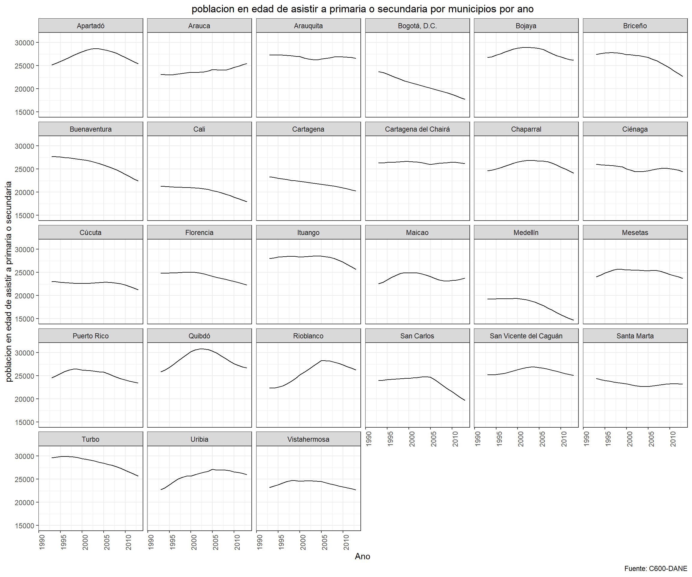
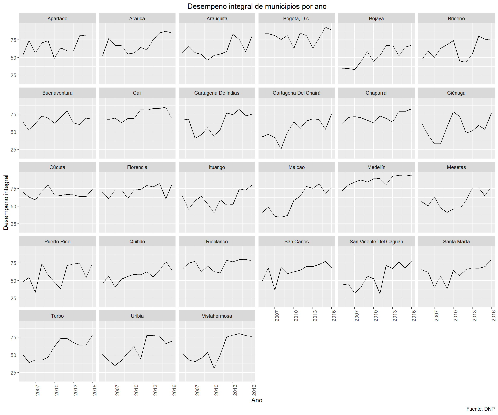
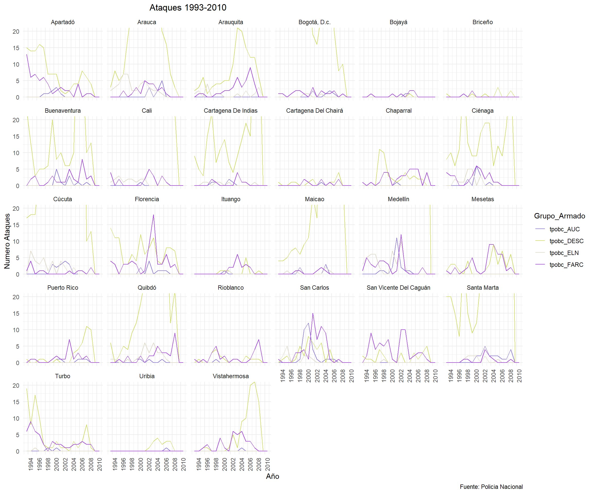

Graficas Evento ACDIVOCA
Equipo Uniandes
22 de Agosto de 2019
1 Setup
Con este codigo se importan todas las bases de datos y todos los paquetes necesarios.
#ANTES DE CORRER, ¡CORRER LA PESTANA "CODIGO PARA ARRANCAR TODO"!
#Set Working Directory
setwd("C:/Users/felig/Dropbox/Proyecto Juan Camilo")
rm(list=ls())
#Importar base de datos donde esta todo
library(readstata13)
library(tidyr)
library(dplyr)
library(data.table)
library(readxl)
library(doBy)
library(vtable)
library(plyr)
library(gridExtra)
library(grid)
library(purrr)
library(psych)
library(ggplot2)
library(psych)
library(Hmisc)
library(matrixStats)
library(ggpubr)
library(vtable)
library(ggthemes)
library(haven)
library(readstata13)
library(tidyr)
library(plyr)
library(dplyr)
library(gridExtra)
library(ggplot2)
library(forcats)
library(readxl)
load("C:/Users/felig/Dropbox/Proyecto Juan Camilo/MergeBases_Environment.RData")
load("C:/Users/felig/Dropbox/Proyecto Juan Camilo/MergeBases2019_Environment.RData")
base_stata <- read_dta("Para Stata/base_acdi_stata.dta",
encoding="UTF-8")
base_stata_2019 <- read_dta("C:/Users/felig/Dropbox/Proyecto Juan Camilo/Para Stata/base_acdi_stata_2019.dta", encoding="UTF-8")
base_cerac <- read_excel("C:/Users/felig/Dropbox/Proyecto Juan Camilo/Evento ACIDVOCA/Copy of CERAC - Tipología de los municipios de Colombia según el conflicto armado interno.xlsx", sheet = 2, col_names = TRUE)
mpios_par <- t(base_stata_2019$codmpio)2 CONFIANZA
Como los items cambiaron de una encuesta a otra, a continuacion vamos a corregirlos.
3 Graficos generales
base_stata_2017 <- base_stata %>% filter(dummyPAR==1)
x2017 <- base_stata %>% select(confianza_vec_arr_mean, confianza_instituciones_arr_men, confianza_medios_mean)
x2019 <- base_stata_2019 %>% select(confianza_vec_mean2019, confianza_instituciones_men2019, confianza_medios_mean2019)
#Creacion de la bsae de datos para poder comparar los graficos por ano.
ano2017 <- c()
ano2017[1:27] <- 2017
ano2017 <- t(ano2017)
ano2019 <- c()
ano2019[1:27] <- 2019
ano2019 <- t(ano2019)
#Aqui juntamos los valores de interes de la ola 2017 y 2019.
base_stata_2019_tidy <- cbind(base_stata_2019[1],base_stata_2017[names(x2017)],
base_stata_2019[names(x2019)])
#Aqui se hace el tidy para poder generar la variable "indicador"
base_stata_2019_tidy_ensayo <- base_stata_2019_tidy %>% gather(key=indicador, value=valor, -Municipio)
#Creamos la columna para distinguir las olas
base_stata_2019_tidy_ensayo$ano <- 0
base_stata_2019_tidy_ensayo[1:81,4] <- 2017
base_stata_2019_tidy_ensayo[82:162,4] <- 2019
#Limpiamos nombres para que todos encajen en uno mismo.
base_stata_2019_tidy_ensayo$indicador <- gsub("_mean","", base_stata_2019_tidy_ensayo$indicador, ignore.case = TRUE)
base_stata_2019_tidy_ensayo$indicador <- gsub("2019","", base_stata_2019_tidy_ensayo$indicador, ignore.case = TRUE)
base_stata_2019_tidy_ensayo$indicador <- gsub("_men","", base_stata_2019_tidy_ensayo$indicador, ignore.case = TRUE)
base_stata_2019_tidy_ensayo$indicador <- gsub("_arr","", base_stata_2019_tidy_ensayo$indicador, ignore.case = TRUE)
base_stata_2019_tidy_ensayo %>%
ggplot(aes(x=as.factor(indicador), y=valor, col=as.factor(ano))) +
geom_point()+
facet_wrap(~Municipio)+
labs(title="Comparacion Mpios PAR 2017 y 2019")+
theme(plot.title = element_text(hjust = 0.5), axis.text.x = element_text(angle=90))base_stata_2019_tidy_ensayo %>%
ggplot(aes(x=Municipio, y=valor, col=as.factor(ano))) +
geom_point()+
facet_wrap(~as.factor(indicador))+
labs(title="Comparacion Mpios PAR 2017 y 2019")+
theme(plot.title = element_text(hjust = 0.5), axis.text.x = element_text(angle=90))4 Educacion
4.1 Graficos variables importantes y algunos descriptivos
Esta seccion esta dividiad por variables. Dentro de cada variable hay dos secciones. En la primer se observa un grafico que muestra las tendencias de la variable para los 44 municipios del ACDI-VOCA. *** La segunda seccion tiene los descriptivos de esas variables. Para mas informacion, acercarse a la descripcion de esa seccion.
4.1.1 Alumnos en total
Esta variable es la cantidad de alumnos de instituciones educativas ***
Observe que, para ciertas variables, se debe calcular un indice que normalice las poblaciones de cada municipio. Esta variable tiene esa transformacion. Esta variable se transforma para que quede medida por cien mil habitantes. Asi, la transformacion que se le hace a estas variables es:
\(T = \frac{N_{t}}{P_{t}} \times 100 000\)
En donde: \(T=\) La tasa por 100 mil habitantes \(N_{t}=\) Numero total de la variable de interes \(P_{t}=\) Poblacion total en el periodo \(t\)
Por lo tanto, generamos el siguiente codigo para poder crear esta variable. El nombre de esas variables es **_cienmil**
4.1.2 Graficos
#Loop para saber poder saber qué observaciones concuerdan tanto en el año del censo como en el año del conflicto. Esto es necesario para generar el índice porque debe haber concordancia en el año de ambas bases.
a <- c()
cede_educacion_44$ano_base_general <- substring(cede_educacion_44$ano_base_general,1,4)
cede_educacion_44$ano_base_general <- as.numeric(cede_educacion_44$ano_base_general)
for(i in 1:nrow(cede_educacion_44)){
if(cede_educacion_44$ano[i]==cede_educacion_44$ano_base_general[i]){
a <- c(a,i)
}
}
#Limpiamos base de datos para que queden solamente las observaciones que concuerden en año de conflicto y en año del censo
cede_educacion_44_eq <- cede_educacion_44[a,]
cede_educacion_44_eq <- cede_educacion_44_eq %>%
dplyr::mutate(alumnos_cienmil=(alumn_total/pobl_tot)*100000)En este codigo se crea el grafico que muestra las tendencias en funcion del tiempo para todos los departamentos del cuestionario ACDI-VOCA.
cede_educacion_44_eq %>%
filter(codmpio%in%mpios_par)%>%ggplot(aes(x = ano, y = alumnos_cienmil)) +
geom_line() +
facet_wrap(~municipio) +
theme_bw()+
labs(y='Cantidad de alumnos por cienmil habitantes', title='Cantidad de alumnos por cien mil habitantes por municipios por ano', x= 'Ano', caption="Fuente: C600-DANE") +
theme(plot.title = element_text(hjust = 0.5), axis.text.x = element_text(angle=90))+
coord_cartesian(xlim = c(1996:2013),
ylim=c(cede_educacion_44_eq$alumnos_cienmil[which.min(cede_educacion_44_eq$alumnos_cienmil)],
cede_educacion_44_eq$alumnos_cienmil[which.max(cede_educacion_44_eq$alumnos_cienmil)]))4.1.2.1 Descriptivos
4.1.2.1.1 Agregados
En esta seccion se generan los descriptivos agregados de la variable.
Aqui se genera el collapse por anos para cada municipio. Es decir, aqui se encuentran los descriptivos de la variable para cada municipio, en donde se hizo un collapse por anos.
El nombre de la variable agregada es : descrip_
descrip_alumnos_cienmil <- summaryBy(alumnos_cienmil ~ municipio+codmpio, cede_educacion_44_eq, FUN=c(sum,mean,sd), na.rm=T ) #Codigo para hacer descriptivos de los homicidios (collapse por anos)
descrip_alumnos_cienmil%>%filter(codmpio%in%mpios_par)%>% arrange(municipio)## municipio codmpio alumnos_cienmil.sum alumnos_cienmil.mean
## 1 Apartadó 5045 352839.4 19602.19
## 2 Arauca 81001 426254.3 23680.80
## 3 Arauquita 81065 442013.9 24556.33
## 4 Bogotá, D.C. 11001 356718.6 19817.70
## 5 Bojaya 27099 467738.5 25985.47
## 6 Briceño 5107 373091.5 20727.30
## 7 Buenaventura 76109 355314.8 19739.71
## 8 Cali 76001 331268.1 18403.78
## 9 Cartagena 13001 425499.5 23638.86
## 10 Cartagena del Chairá 18150 460797.8 25599.88
## 11 Chaparral 73168 508408.8 28244.93
## 12 Ciénaga 47189 517625.7 28756.98
## 13 Cúcuta 54001 441246.4 24513.69
## 14 Florencia 18001 440663.0 24481.28
## 15 Ituango 5361 438586.9 24365.94
## 16 Maicao 44430 517657.2 28758.73
## 17 Medellín 5001 356054.4 19780.80
## 18 Mesetas 50330 434872.3 24159.57
## 19 Puerto Rico 50590 259659.0 14425.50
## 20 Quibdó 27001 555564.4 30864.69
## 21 Rioblanco 73616 400282.3 22237.90
## 22 San Carlos 5649 402387.4 22354.85
## 23 San Vicente del Caguán 18753 436923.7 24273.54
## 24 Santa Marta 47001 458015.9 25445.33
## 25 Turbo 5837 538067.4 29892.63
## 26 Uribia 44847 275596.6 15310.92
## 27 Vistahermosa 50711 396921.1 22051.17
## alumnos_cienmil.sd
## 1 3900.491
## 2 2104.737
## 3 2714.285
## 4 1705.827
## 5 7207.539
## 6 2724.880
## 7 3403.845
## 8 3089.769
## 9 2378.076
## 10 3669.110
## 11 1376.378
## 12 5678.345
## 13 1539.850
## 14 2114.263
## 15 2740.012
## 16 1945.788
## 17 2204.533
## 18 4039.396
## 19 3749.413
## 20 3540.654
## 21 2777.948
## 22 5339.703
## 23 3386.866
## 24 1138.146
## 25 1690.383
## 26 4556.120
## 27 2830.4834.1.2.1.2 \(\Delta\)
A continuacion se generan las variables necesarias para hacer el \(\Delta\). Para obtener el \(\Delta\) se hace la diferencia de la variable entre los primeros 5 anos y los ultimos 5 anos de los datos disponibles. Por ejemplo, si la variable de interes se recolecto entre 1997 y 2016, el \(\Delta\) sera la reste entre el collapase de los anos 1997 a 2001 y el collapse de los anos 2012 a 2016. El nombre de la varible \(\Delta\) es: diff_
descrip_alumnos_cienmil_5antes <- cede_educacion_44_eq %>%
filter(codmpio%in%mpios_par)%>% filter(ano<"2001-04-27") #Codigo para seleccionar solamente las variables que sean menores al ano 2008
descrip_alumnos_cienmil_5antes <- summaryBy(alumnos_cienmil ~ municipio+codmpio, descrip_alumnos_cienmil_5antes, FUN=c(sum,mean,sd), na.rm=T ) #Descriptivos de esos anos.
descrip_alumnos_cienmil_5despues <- cede_educacion_44_eq %>%
filter(codmpio%in%mpios_par)%>% filter(ano>"2008-04-27") #Codigo para seleccionar solamente las variables que sean mayores al ano 2008.
descrip_alumnos_cienmil_5despues <- summaryBy(alumnos_cienmil ~ municipio+codmpio, descrip_alumnos_cienmil_5despues, FUN=c(sum,mean,sd), na.rm=T ) #Descriptivos de esos anos. Codigo para calcular el \(\Delta\)
diff_alumnos_cienmil_mean <- descrip_alumnos_cienmil_5antes$alumnos_cienmil.mean -descrip_alumnos_cienmil_5despues$alumnos_cienmil.mean
diff_alumnos_cienmil_sd <- descrip_alumnos_cienmil_5antes$alumnos_cienmil.sd -descrip_alumnos_cienmil_5despues$alumnos_cienmil.sd #Sacar diferencias entre esos estadisticos. Un valor negativo es que hay mas ataques en los ultimos 5 anos.
print(diff_alumnos_cienmil_mean)## [1] 6892.21647 3675.10085 5705.98273 3802.65819 -14371.20775
## [6] -5075.64021 6341.92454 6869.81163 4244.66119 -6234.52519
## [11] -618.51567 -5121.87721 2689.39454 -991.51974 -5008.14531
## [16] -643.91765 4855.76816 7254.00653 -3248.23781 77.81530
## [21] -3237.66232 8688.16830 -1978.14567 66.19836 2298.58363
## [26] -5794.83534 4016.889634.1.3 Docentes con doctorado en total
4.1.3.1 Graficos
#Loop para saber poder saber qué observaciones concuerdan tanto en el año del censo como en el año del conflicto. Esto es necesario para generar el índice porque debe haber concordancia en el año de ambas bases.
a <- c()
cede_educacion_44$ano_base_general <- substring(cede_educacion_44$ano_base_general,1,4)
cede_educacion_44$ano_base_general <- as.numeric(cede_educacion_44$ano_base_general)
for(i in 1:nrow(cede_educacion_44)){
if(cede_educacion_44$ano[i]==cede_educacion_44$ano_base_general[i]){
a <- c(a,i)
}
}
#Limpiamos base de datos para que queden solamente las observaciones que concuerden en año de conflicto y en año del censo
cede_educacion_44_eq <- cede_educacion_44[a,]
cede_educacion_44_eq <- cede_educacion_44_eq %>%
dplyr::mutate(phds_cienmil=((dies_docto_1+dies_docto_2)/pobl_tot)*100000)En este codigo se crea el grafico que muestra las tendencias en funcion del tiempo para todos los departamentos del cuestionario ACDI-VOCA.
cede_educacion_44_eq %>%
filter(codmpio%in%mpios_par)%>%ggplot(aes(x = ano, y = phds_cienmil)) +
geom_line() +
facet_wrap(~municipio) +
theme_bw()+
labs(y='Cantidad de docentes con doctorado por cienmil habitantes', title='Cantidad de docentes con doctorado por cien mil habitantes por municipios por ano', x= 'Ano', caption="Fuente: C600-DANE") +
theme(plot.title = element_text(hjust = 0.5), axis.text.x = element_text(angle=90))+
coord_cartesian(xlim = c(2007:2015),
ylim=c(cede_educacion_44_eq$phds_cienmil[which.min(cede_educacion_44_eq$phds_cienmil)],
cede_educacion_44_eq$phds_cienmil[which.max(cede_educacion_44_eq$phds_cienmil)]))
4.1.3.2 Descriptivos
4.1.3.2.1 Agregados
En esta seccion se generan los descriptivos agregados de la variable.
Aqui se genera el collapse por anos para cada municipio. Es decir, aqui se encuentran los descriptivos de la variable para cada municipio, en donde se hizo un collapse por anos.
El nombre de la variable agregada es : descrip_
descrip_phds_cienmil <- summaryBy(phds_cienmil ~ municipio+codmpio, cede_educacion_44_eq, FUN=c(sum,mean,sd), na.rm=T ) #Codigo para hacer descriptivos de los homicidios (collapse por anos)
descrip_phds_cienmil%>%filter(codmpio%in%mpios_par)%>% arrange(municipio)## municipio codmpio phds_cienmil.sum phds_cienmil.mean
## 1 Apartadó 5045 0.7147299 0.1021043
## 2 Arauca 81001 37.9679451 4.2186606
## 3 Arauquita 81065 0.0000000 NaN
## 4 Bogotá, D.C. 11001 640.4843176 71.1649242
## 5 Bojaya 27099 0.0000000 NaN
## 6 Briceño 5107 0.0000000 NaN
## 7 Buenaventura 76109 8.2480955 0.9164551
## 8 Cali 76001 391.8298917 43.5366546
## 9 Cartagena 13001 179.9960617 19.9995624
## 10 Cartagena del Chairá 18150 0.0000000 NaN
## 11 Chaparral 73168 0.0000000 NaN
## 12 Ciénaga 47189 5.8442813 0.8348973
## 13 Cúcuta 54001 59.4603250 6.6067028
## 14 Florencia 18001 137.5616148 15.2846239
## 15 Ituango 5361 0.0000000 NaN
## 16 Maicao 44430 0.0000000 NaN
## 17 Medellín 5001 978.0479168 108.6719908
## 18 Mesetas 50330 0.0000000 NaN
## 19 Puerto Rico 50590 0.0000000 NaN
## 20 Quibdó 27001 167.9938446 18.6659827
## 21 Rioblanco 73616 0.0000000 NaN
## 22 San Carlos 5649 0.0000000 NaN
## 23 San Vicente del Caguán 18753 0.0000000 NaN
## 24 Santa Marta 47001 170.9153447 18.9905939
## 25 Turbo 5837 81.4923145 9.0547016
## 26 Uribia 44847 0.0000000 NaN
## 27 Vistahermosa 50711 0.0000000 NaN
## phds_cienmil.sd
## 1 0.2701425
## 2 1.8296583
## 3 NA
## 4 19.7839690
## 5 NA
## 6 NA
## 7 0.6521503
## 8 7.9349509
## 9 4.2722829
## 10 NA
## 11 NA
## 12 0.8774162
## 13 2.1037430
## 14 0.8539474
## 15 NA
## 16 NA
## 17 22.9217392
## 18 NA
## 19 NA
## 20 4.8891756
## 21 NA
## 22 NA
## 23 NA
## 24 7.4880469
## 25 6.6132823
## 26 NA
## 27 NA4.1.3.2.2 \(\Delta\)
A continuacion se generan las variables necesarias para hacer el \(\Delta\). Para obtener el \(\Delta\) se hace la diferencia de la variable entre los primeros 5 anos y los ultimos 5 anos de los datos disponibles. Por ejemplo, si la variable de interes se recolecto entre 1997 y 2016, el \(\Delta\) sera la reste entre el collapase de los anos 1997 a 2001 y el collapse de los anos 2012 a 2016. El nombre de la varible \(\Delta\) es: diff_
descrip_phds_cienmil_5antes <- cede_educacion_44_eq %>%
filter(codmpio%in%mpios_par)%>% filter(ano<"2011-04-27") #Codigo para seleccionar solamente las variables que sean menores al ano 2008
descrip_phds_cienmil_5antes <- summaryBy(phds_cienmil ~ municipio+codmpio, descrip_phds_cienmil_5antes, FUN=c(sum,mean,sd), na.rm=T ) #Descriptivos de esos anos.
descrip_phds_cienmil_5despues <- cede_educacion_44_eq %>%
filter(codmpio%in%mpios_par)%>% filter(ano>"2010-04-27") #Codigo para seleccionar solamente las variables que sean mayores al ano 2008.
descrip_phds_cienmil_5despues <- summaryBy(phds_cienmil ~ municipio+codmpio, descrip_phds_cienmil_5despues, FUN=c(sum,mean,sd), na.rm=T ) #Descriptivos de esos anos. Codigo para calcular el \(\Delta\)
diff_phds_cienmil_mean <- descrip_phds_cienmil_5antes$phds_cienmil.mean -descrip_phds_cienmil_5despues$phds_cienmil.mean
diff_phds_cienmil_sd <- descrip_phds_cienmil_5antes$phds_cienmil.sd -descrip_phds_cienmil_5despues$phds_cienmil.sd #Sacar diferencias entre esos estadisticos. Un valor negativo es que hay mas ataques en los ultimos 5 anos.
print(diff_phds_cienmil_mean)## [1] 0.1429460 -1.9408442 NaN -24.9821258 NaN
## [6] NaN -0.3994399 -7.8038474 -4.6973132 NaN
## [11] NaN 1.1688563 -2.7855911 -0.1198376 NaN
## [16] NaN -27.6721031 NaN NaN -6.6192292
## [21] NaN NaN NaN -11.7165840 -3.4071646
## [26] NaN NaN4.1.4 Porcentaje de la poblacion de mas de 15 anos o mas que sabe leer y escribir (Tasa de alfabetismo) 2005
4.1.5 Graficos
En este codigo se crea el grafico que muestra las tendencias en funcion del tiempo para todos los departamentos del cuestionario ACDI-VOCA.
cede_educacion_44 %>%
filter(codmpio%in%mpios_par)%>%ggplot(aes(x = ano, y = ind_alfa2005)) +
geom_point() +
facet_wrap(~municipio) +
theme_bw()+
labs(y='Tasa de alfabetismo', title='Tasa de alfabetismo por municipios por ano', x= 'Ano', caption="Fuente: C600-DANE") +
theme(plot.title = element_text(hjust = 0.5), axis.text.x = element_text(angle=90))+
coord_cartesian(xlim = c(1993:2013),
ylim=c(cede_educacion_44$ind_alfa2005[which.min(cede_educacion_44$ind_alfa2005)],cede_educacion_44$ind_alfa2005[which.max(cede_educacion_44$ind_alfa2005)]))
Segun esta encuesta, la tasa de analfabetismo no ha cambiado (cuando se revisa el numero en bruto, igualmente, no hay variacion por municipio por ano.)
Por esta razon se decide culminar el analisis de esta variable aqui
4.2 Proyecciones de poblacion en edad de asistir a primaria o secundaria, es decir, poblacion entre 7 a 17 anos.
Esta variable es una proyeccion de cuanta gente puede asistir al colegio. Como es una variable poblacional se va a hacer por cada cienmil habitantes.
Observe que, para ciertas variables, se debe calcular un indice que normalice las poblaciones de cada municipio. Esta variable tiene esa transformacion. Esta variable se transforma para que quede medida por cien mil habitantes. Asi, la transformacion que se le hace a estas variables es:
\(T = \frac{N_{t}}{P_{t}} \times 100 000\)
En donde: \(T=\) La tasa por 100 mil habitantes \(N_{t}=\) Numero total de la variable de interes \(P_{t}=\) Poblacion total en el periodo \(t\)
Por lo tanto, generamos el siguiente codigo para poder crear esta variable. El nombre de esas variables es **_cienmil**
4.2.1 Graficos
#Loop para saber poder saber qué observaciones concuerdan tanto en el año del censo como en el año del conflicto. Esto es necesario para generar el índice porque debe haber concordancia en el año de ambas bases.
a <- c()
cede_educacion_44$ano_base_general <- substring(cede_educacion_44$ano_base_general,1,4)
cede_educacion_44$ano_base_general <- as.numeric(cede_educacion_44$ano_base_general)
for(i in 1:nrow(cede_educacion_44)){
if(cede_educacion_44$ano[i]==cede_educacion_44$ano_base_general[i]){
a <- c(a,i)
}
}
#Limpiamos base de datos para que queden solamente las observaciones que concuerden en año de conflicto y en año del censo
cede_educacion_44_eq <- cede_educacion_44[a,]
cede_educacion_44_eq <- cede_educacion_44_eq %>%
dplyr::mutate(estudiantes_proy_cienmil=((pobsimple_primaria_p+pobsimple_secundaria_p)/pobl_tot)*100000)En este codigo se crea el grafico que muestra las tendencias en funcion del tiempo para todos los departamentos del cuestionario ACDI-VOCA.
cede_educacion_44_eq %>%
filter(codmpio%in%mpios_par)%>%ggplot(aes(x = ano, y = estudiantes_proy_cienmil)) +
geom_line() +
facet_wrap(~municipio) +
theme_bw()+
labs(y='poblacion en edad de asistir a primaria o secundaria', title='poblacion en edad de asistir a primaria o secundaria por municipios por ano', x= 'Ano', caption="Fuente: C600-DANE") +
theme(plot.title = element_text(hjust = 0.5), axis.text.x = element_text(angle=90))+
coord_cartesian(xlim = c(1991:2013),
ylim=c(cede_educacion_44_eq$estudiantes_proy_cienmil[which.min(cede_educacion_44_eq$estudiantes_proy_cienmil)],cede_educacion_44_eq$estudiantes_proy_cienmil[which.max(cede_educacion_44_eq$estudiantes_proy_cienmil)]))4.2.2 Descriptivos
4.2.2.1 Agregados
En esta seccion se generan los descriptivos agregados de la variable.
Aqui se genera el collapse por anos para cada municipio. Es decir, aqui se encuentran los descriptivos de la variable para cada municipio, en donde se hizo un collapse por anos.
El nombre de la variable agregada es : descrip_
descrip_estudiantes_proy_cienmil <- summaryBy(estudiantes_proy_cienmil ~ municipio+codmpio, cede_educacion_44_eq, FUN=c(sum,mean,sd), na.rm=T ) #Codigo para hacer descriptivos de los homicidios (collapse por anos)
descrip_estudiantes_proy_cienmil%>%filter(codmpio%in%mpios_par)%>% arrange(municipio)## municipio codmpio estudiantes_proy_cienmil.sum
## 1 Apartadó 5045 571088.0
## 2 Arauca 81001 501663.7
## 3 Arauquita 81065 563966.6
## 4 Bogotá, D.C. 11001 435458.2
## 5 Bojaya 27099 583924.0
## 6 Briceño 5107 553974.6
## 7 Buenaventura 76109 544136.8
## 8 Cali 76001 425088.9
## 9 Cartagena 13001 460507.1
## 10 Cartagena del Chairá 18150 554172.5
## 11 Chaparral 73168 542531.1
## 12 Ciénaga 47189 527810.4
## 13 Cúcuta 54001 474284.9
## 14 Florencia 18001 507784.8
## 15 Ituango 5361 587218.8
## 16 Maicao 44430 502200.9
## 17 Medellín 5001 377732.9
## 18 Mesetas 50330 525936.0
## 19 Puerto Rico 50590 531101.6
## 20 Quibdó 27001 601085.2
## 21 Rioblanco 73616 541372.0
## 22 San Carlos 5649 492453.2
## 23 San Vicente del Caguán 18753 545611.5
## 24 Santa Marta 47001 489365.0
## 25 Turbo 5837 598902.3
## 26 Uribia 44847 541463.4
## 27 Vistahermosa 50711 503618.6
## estudiantes_proy_cienmil.mean estudiantes_proy_cienmil.sd
## 1 27194.67 1175.6709
## 2 23888.75 706.4886
## 3 26855.55 339.0541
## 4 20736.11 1804.9584
## 5 27805.90 947.6958
## 6 26379.74 1608.2871
## 7 25911.28 1684.6592
## 8 20242.33 1060.4962
## 9 21928.91 896.7472
## 10 26389.17 169.6119
## 11 25834.82 892.9510
## 12 25133.83 529.9105
## 13 22585.00 439.2114
## 14 24180.23 930.9556
## 15 27962.80 831.9411
## 16 23914.33 756.8853
## 17 17987.28 1629.5620
## 18 25044.57 608.6402
## 19 25290.55 977.8077
## 20 28623.11 1645.7662
## 21 25779.62 2145.0890
## 22 23450.15 1580.9722
## 23 25981.50 622.1357
## 24 23303.09 485.1625
## 25 28519.16 1350.0434
## 26 25783.97 1276.8158
## 27 23981.84 655.45944.2.2.2 \(\Delta\)
A continuacion se generan las variables necesarias para hacer el \(\Delta\). Para obtener el \(\Delta\) se hace la diferencia de la variable entre los primeros 5 anos y los ultimos 5 anos de los datos disponibles. Por ejemplo, si la variable de interes se recolecto entre 1997 y 2016, el \(\Delta\) sera la reste entre el collapase de los anos 1997 a 2001 y el collapse de los anos 2012 a 2016. El nombre de la varible \(\Delta\) es: diff_
descrip_estudiantes_proy_cienmil_5antes <- cede_educacion_44_eq %>%
filter(codmpio%in%mpios_par)%>% filter(ano<"1996-04-27") #Codigo para seleccionar solamente las variables que sean menores al ano 2008
descrip_estudiantes_proy_cienmil_5antes <- summaryBy(estudiantes_proy_cienmil ~ municipio+codmpio, descrip_estudiantes_proy_cienmil_5antes, FUN=c(sum,mean,sd), na.rm=T ) #Descriptivos de esos anos.
descrip_estudiantes_proy_cienmil_5despues <- cede_educacion_44_eq %>%
filter(codmpio%in%mpios_par)%>% filter(ano>"2008-04-27") #Codigo para seleccionar solamente las variables que sean mayores al ano 2008.
descrip_estudiantes_proy_cienmil_5despues <- summaryBy(estudiantes_proy_cienmil ~ municipio+codmpio, descrip_estudiantes_proy_cienmil_5despues, FUN=c(sum,mean,sd), na.rm=T ) #Descriptivos de esos anos. Codigo para calcular el \(\Delta\)
diff_estudiantes_proy_cienmil_mean <- descrip_estudiantes_proy_cienmil_5antes$estudiantes_proy_cienmil.mean -descrip_estudiantes_proy_cienmil_5despues$estudiantes_proy_cienmil.mean
diff_estudiantes_proy_cienmil_sd <- descrip_estudiantes_proy_cienmil_5antes$estudiantes_proy_cienmil.sd -descrip_estudiantes_proy_cienmil_5despues$estudiantes_proy_cienmil.sd #Sacar diferencias entre esos estadisticos. Un valor negativo es que hay mas ataques en los ultimos 5 anos.
print(diff_estudiantes_proy_cienmil_mean)## [1] -579.52921 -1805.26876 491.67415 4878.08434 479.35627
## [6] 3786.02354 4233.27746 2601.66063 2402.54198 18.66810
## [11] -67.97985 1008.82970 988.82477 2085.16926 1551.09992
## [16] -247.76242 3800.12046 346.29064 1350.00439 -723.60083
## [21] -4445.48542 3206.90306 -209.57446 862.97032 3296.96836
## [26] -2876.23573 559.476484.3 Total establecimientos educativos
4.3.1 Graficos
En este codigo se crea el grafico que muestra las tendencias en funcion del tiempo para todos los departamentos del cuestionario ACDI-VOCA.
cede_educacion_44 %>%
filter(codmpio%in%mpios_par)%>%ggplot(aes(x = ano, y = t_establ)) +
geom_line() +
facet_wrap(~municipio) +
theme_bw()+
labs(y='poblacion en edad de asistir a primaria o secundaria', title='poblacion en edad de asistir a primaria o secundaria por municipios por ano', x= 'Ano', caption="Fuente: C600-DANE") +
theme(plot.title = element_text(hjust = 0.5), axis.text.x = element_text(angle=90))+
coord_cartesian(xlim = c(1996:2013),
ylim=c(cede_educacion_44$t_establ[which.min(cede_educacion_44$t_establ)],cede_educacion_44$t_establ[which.max(cede_educacion_44$t_establ)]))5 Gobierno
#Cambiarle los nombres a algunos municipios que no estan codificados igual
cede_gobierno_44$municipio[cede_gobierno_44$municipio=="Bojaya"] <- "Bojayá"
cede_gobierno_44$municipio[cede_gobierno_44$municipio=="Bogotá, D.C."] <- "Bogotá, D.c."
cede_gobierno_44$municipio[cede_gobierno_44$municipio=="Cartagena"] <- "Cartagena De Indias"
cede_gobierno_44$municipio[cede_gobierno_44$municipio=="Bojaya"] <- "Bojayá"
cede_gobierno_44$municipio[cede_gobierno_44$municipio=="Cartagena del Chairá"] <- "Cartagena Del Chairá"
cede_gobierno_44$municipio[cede_gobierno_44$municipio=="San Vicente del Caguán"] <- "San Vicente Del Caguán"5.1 Graficos variables importantes y algunos descriptivos
Esta seccion esta dividiad por variables. Dentro de cada variable hay dos secciones. En la primer se observa un grafico que muestra las tendencias de la variable para los 44 municipios del ACDI-VOCA. *** La segunda seccion tiene los descriptivos de esas variables. Para mas informacion, acercarse a la descripcion de esa seccion.
5.1.1 Analisis Desempeno fiscal (indice)
Este indice mide globalmente el resultado fiscal alcanzado en cada año y se encuentra en una escala de 0 a 100, donde los valores cercanos a 0 reflejan un bajo desempeño fiscal y valores cercanos a 100 significan que la entidad territorial logro en conjunto los siguientes resultados (DNP, 2013): Buen balance en su desempeño fiscal, Suficientes recursos para sostener su funcionamiento Cumplimiento de gasto de funcionamiento segun la Ley 617/00, Importante nivel de recursos propios (solvencia tributaria) como contrapartida a los recursos de SGP, Altos niveles de inversion, Adecuada capacidad de respaldo del servicio de su deuda, Generacion de ahorro corriente, necesario para garantizar su solvencia financiera
5.1.1.1 Graficos
En este codigo se crea el grafico que muestra las tendencias en funcion del tiempo para todos los departamentos del cuestionario ACDI-VOCA.
cede_gobierno_44 %>%
filter(codmpio%in%mpios_par)%>%ggplot(aes(x = ano, y = DF_desemp_fisc)) +
geom_line() +
scale_color_manual(values = palette) +
facet_wrap(~municipio) +
labs(y='Desempeno fiscal', title='Desempeno fiscal de municipios por ano', x= 'Año', caption="Fuente: DNP") +
theme(plot.title = element_text(hjust = 0.5), axis.text.x = element_text(angle=90))+
coord_cartesian(xlim = c(2000:2016),
ylim=c(cede_gobierno_44$DF_desemp_fisc[which.min(cede_gobierno_44$DF_desemp_fisc)],
cede_gobierno_44$DF_desemp_fisc[which.max(cede_gobierno_44$DF_desemp_fisc)]))
5.1.1.2 Descriptivos
5.1.1.2.1 Agregados
En esta seccion se generan los descriptivos agregados de la variable.
Aqui se genera el collapse por anos para cada municipio. Es decir, aqui se encuentran los descriptivos de la variable para cada municipio, en donde se hizo un collapse por anos.
El nombre de la variable agregada es : descrip_
descrip_desemp_fisc <- summaryBy(DF_desemp_fisc ~ municipio+codmpio, cede_gobierno_44, FUN=c(sum,mean,sd), na.rm=T ) #Codigo para hacer descriptivos de los homicidios (collapse por anos)
descrip_desemp_fisc%>%filter(codmpio%in%mpios_par)%>% arrange(municipio) ## municipio codmpio DF_desemp_fisc.sum DF_desemp_fisc.mean
## 1 Apartadó 5045 27260.27 64.14181
## 2 Arauca 81001 29972.11 70.52261
## 3 Arauquita 81065 27000.89 67.50223
## 4 Bogotá, D.c. 11001 32497.52 76.46476
## 5 Bojayá 27099 21070.31 56.18749
## 6 Briceño 5107 27375.99 64.41410
## 7 Buenaventura 76109 25725.22 64.31304
## 8 Cali 76001 28058.18 66.01925
## 9 Cartagena De Indias 13001 30281.95 71.25164
## 10 Cartagena Del Chairá 18150 27971.98 65.81643
## 11 Chaparral 73168 26503.91 62.36213
## 12 Ciénaga 47189 24643.83 61.60958
## 13 Cúcuta 54001 29268.79 68.86774
## 14 Florencia 18001 28215.01 66.38826
## 15 Ituango 5361 25613.74 60.26763
## 16 Maicao 44430 27392.08 68.48019
## 17 Medellín 5001 32965.02 77.56475
## 18 Mesetas 50330 22210.15 59.22707
## 19 Puerto Rico 50590 26226.17 61.70864
## 20 Quibdó 27001 26177.07 61.59310
## 21 Rioblanco 73616 25186.57 59.26253
## 22 San Carlos 5649 26571.62 62.52147
## 23 San Vicente Del Caguán 18753 26129.46 61.48109
## 24 Santa Marta 47001 28163.60 70.40900
## 25 Turbo 5837 26439.36 62.21026
## 26 Uribia 44847 27945.95 65.75518
## 27 Vistahermosa 50711 23322.86 66.63673
## DF_desemp_fisc.sd
## 1 7.335719
## 2 8.270680
## 3 10.924380
## 4 6.746336
## 5 12.490966
## 6 9.497140
## 7 9.556422
## 8 11.985808
## 9 8.287958
## 10 6.381901
## 11 8.900425
## 12 14.359703
## 13 8.795271
## 14 7.201939
## 15 8.776457
## 16 8.052202
## 17 8.298412
## 18 6.800743
## 19 10.166626
## 20 12.144065
## 21 4.968069
## 22 7.025342
## 23 8.875115
## 24 10.749073
## 25 10.289768
## 26 7.548263
## 27 5.9010835.1.1.2.2 \(\Delta\)
A continuacion se generan las variables necesarias para hacer el \(\Delta\). Para obtener el \(\Delta\) se hace la diferencia de la variable entre los primeros 5 anos y los ultimos 5 anos de los datos disponibles. Por ejemplo, si la variable de interes se recolecto entre 1997 y 2016, el \(\Delta\) sera la reste entre el collapase de los anos 1997 a 2001 y el collapse de los anos 2012 a 2016. El nombre de la varible \(\Delta\) es: diff_
descrip_desemp_fisc_5antes <- cede_gobierno_44 %>%
filter(codmpio%in%mpios_par)%>% filter(ano<"2005-04-27") #Codigo para seleccionar solamente las variables que sean menores al ano 2008
descrip_desemp_fisc_5antes <- summaryBy(DF_desemp_fisc ~ municipio+codmpio, descrip_desemp_fisc_5antes, FUN=c(sum,mean,sd), na.rm=T ) #Descriptivos de esos anos.
descrip_desemp_fisc_5despues <- cede_gobierno_44 %>%
filter(codmpio%in%mpios_par)%>% filter(ano>"2012-04-27") #Codigo para seleccionar solamente las variables que sean mayores al ano 2008.
descrip_desemp_fisc_5despues <- summaryBy(DF_desemp_fisc ~ municipio+codmpio, descrip_desemp_fisc_5despues, FUN=c(sum,mean,sd), na.rm=T ) #Descriptivos de esos anos.Codigo para calcular el \(\Delta\)
diff_desemp_fisc_mean <- descrip_desemp_fisc_5antes$DF_desemp_fisc.mean -descrip_desemp_fisc_5despues$DF_desemp_fisc.mean
diff_desemp_fisc_sd <- descrip_desemp_fisc_5antes$DF_desemp_fisc.sd -descrip_desemp_fisc_5despues$DF_desemp_fisc.sd #Sacar diferencias entre esos estadisticos. Un valor negativo es que hay mas ataques en los ultimos 5 anos.
print(diff_desemp_fisc_mean)## [1] -13.75208 -16.63499 -19.71878 -15.42440 -19.43050 -21.95287 -19.11809
## [8] -26.46036 -15.33714 -8.15548 -19.37056 -29.82204 -16.32968 -13.37525
## [15] -19.13117 -11.18700 -15.23194 -14.20314 -17.17856 -22.99105 -10.74043
## [22] -10.83351 -18.86053 -19.53355 -16.31021 -14.00620 -10.594045.1.2 Analisis Desempeno integral (indice)
La evaluacion del desempeno integral tiene por objeto evaluar, valga la redundancia, el desempeno de la gestion de las entidades territoriales en sus competencias fundamentales, basado en: los resultados obtenidos, en los compromisos adquiridos por estas entidades en los planes de desarrollo, el marco del proceso de descentralizacion de competencias y recursos, asi como, el cumplimiento del ordenamiento juridico que lo fundamenta.
5.1.2.1 Graficos
En este codigo se crea el grafico que muestra las tendencias en funcion del tiempo para todos los departamentos del cuestionario ACDI-VOCA.
cede_gobierno_44 %>%
filter(codmpio%in%mpios_par)%>%ggplot(aes(x = ano, y = DI_desemp_int)) +
geom_line() +
scale_color_manual(values = palette) +
facet_wrap(~municipio) +
labs(y='Desempeno integral', title='Desempeno integral de municipios por ano', x= 'Ano', caption="Fuente: DNP") +
theme(plot.title = element_text(hjust = 0.5), axis.text.x = element_text(angle=90))+
coord_cartesian(xlim = c(2005:2016),
ylim=c(cede_gobierno_44$DI_desemp_int[which.min(cede_gobierno_44$DI_desemp_int)],
cede_gobierno_44$DI_desemp_int[which.max(cede_gobierno_44$DI_desemp_int)]))Grafico del desempeno integral junto con el fiscal
cede_gobierno_44 %>%
filter(codmpio%in%mpios_par)%>%ggplot(aes(x = ano)) +
geom_line(aes(y = DI_desemp_int)) +
geom_line(aes(y = DF_desemp_fisc), color="blue") +
labs(color="Desempeno integral")+
facet_wrap(~municipio) +
labs(y='Desempeno integral', title='Desempeno fiscal e integral (azul) de municipios por ano', x= 'Año', caption="Fuente: DNP") +
theme(plot.title = element_text(hjust = 0.5), axis.text.x = element_text(angle=90))+
coord_cartesian(xlim = c(2000:2016),
ylim=c(cede_gobierno_44$DI_desemp_int[which.min(cede_gobierno_44$DI_desemp_int)],
cede_gobierno_44$DI_desemp_int[which.max(cede_gobierno_44$DI_desemp_int)]))5.1.2.2 Descriptivos
5.1.2.2.1 Agregados
En esta seccion se generan los descriptivos agregados de la variable.
Aqui se genera el collapse por anos para cada municipio. Es decir, aqui se encuentran los descriptivos de la variable para cada municipio, en donde se hizo un collapse por anos.
El nombre de la variable agregada es : descrip_
descrip_desemp_int <- summaryBy(DI_desemp_int ~ municipio+codmpio, cede_gobierno_44, FUN=c(sum,mean,sd), na.rm=T ) #Codigo para hacer descriptivos de los homicidios (collapse por anos)
descrip_desemp_int%>%filter(codmpio%in%mpios_par)%>% arrange(municipio) ## municipio codmpio DI_desemp_int.sum DI_desemp_int.mean
## 1 Apartadó 5045 20106.31 67.02104
## 2 Arauca 81001 20860.76 69.53588
## 3 Arauquita 81065 18608.37 62.02791
## 4 Bogotá, D.c. 11001 23943.65 79.81217
## 5 Bojayá 27099 15530.59 51.76863
## 6 Briceño 5107 18396.71 61.32237
## 7 Buenaventura 76109 19842.97 66.14324
## 8 Cali 76001 22234.11 74.11371
## 9 Cartagena De Indias 13001 18922.15 63.07382
## 10 Cartagena Del Chairá 18150 16407.45 54.69149
## 11 Chaparral 73168 21250.62 70.83541
## 12 Ciénaga 47189 16790.69 55.96896
## 13 Cúcuta 54001 20224.19 67.41396
## 14 Florencia 18001 21644.18 72.14727
## 15 Ituango 5361 17902.48 59.67492
## 16 Maicao 44430 17497.27 58.32425
## 17 Medellín 5001 26029.73 86.76577
## 18 Mesetas 50330 17605.37 58.68457
## 19 Puerto Rico 50590 17565.69 58.55230
## 20 Quibdó 27001 17303.02 57.67674
## 21 Rioblanco 73616 21714.45 72.38149
## 22 San Carlos 5649 19182.23 63.94077
## 23 San Vicente Del Caguán 18753 16553.26 55.17754
## 24 Santa Marta 47001 18365.93 61.21975
## 25 Turbo 5837 17600.97 58.66990
## 26 Uribia 44847 17420.44 58.06814
## 27 Vistahermosa 50711 17605.68 58.68561
## DI_desemp_int.sd
## 1 11.341393
## 2 11.752489
## 3 11.133396
## 4 8.732603
## 5 13.061704
## 6 12.777582
## 7 6.805283
## 8 7.650715
## 9 13.782988
## 10 13.690042
## 11 6.493170
## 12 14.371764
## 13 5.443014
## 14 7.508825
## 15 11.387228
## 16 17.559274
## 17 6.594914
## 18 12.385153
## 19 14.198295
## 20 8.922810
## 21 7.097689
## 22 10.716338
## 23 16.065114
## 24 11.369414
## 25 13.127228
## 26 14.889568
## 27 16.9717825.1.2.3 \(\Delta\)
A continuacion se generan las variables necesarias para hacer el \(\Delta\). Para obtener el \(\Delta\) se hace la diferencia de la variable entre los primeros 5 anos y los ultimos 5 anos de los datos disponibles. Por ejemplo, si la variable de interes se recolecto entre 1997 y 2016, el \(\Delta\) sera la reste entre el collapase de los anos 1997 a 2001 y el collapse de los anos 2012 a 2016. El nombre de la varible \(\Delta\) es: diff_
descrip_desemp_int_5antes <- cede_gobierno_44 %>%
filter(codmpio%in%mpios_par)%>% filter(ano<"2005-04-27") #Codigo para seleccionar solamente las variables que sean menores al ano 2008
descrip_desemp_int_5antes <- summaryBy(DI_desemp_int ~ municipio+codmpio, descrip_desemp_int_5antes, FUN=c(sum,mean,sd), na.rm=T ) #Descriptivos de esos anos.
descrip_desemp_int_5despues <- cede_gobierno_44 %>%
filter(codmpio%in%mpios_par)%>% filter(ano>"2012-04-27") #Codigo para seleccionar solamente las variables que sean mayores al ano 2008.
descrip_desemp_int_5despues <- summaryBy(DI_desemp_int ~ municipio+codmpio, descrip_desemp_int_5despues, FUN=c(sum,mean,sd), na.rm=T ) #Descriptivos de esos anos. Codigo para calcular el \(\Delta\)
diff_desemp_int_mean <- descrip_desemp_int_5antes$DI_desemp_int.mean -descrip_desemp_int_5despues$DI_desemp_int.mean
diff_desemp_int_sd <- descrip_desemp_int_5antes$DI_desemp_int.sd -descrip_desemp_int_5despues$DI_desemp_int.sd #Sacar diferencias entre esos estadisticos. Un valor negativo es que hay mas ataques en los ultimos 5 anos.
print(diff_desemp_int_mean)## [1] -23.0100038 -30.2110024 -16.9756597 2.6826478 -29.0607604
## [6] -25.4223930 -0.9490785 -11.1922495 -9.4522479 -23.4633707
## [11] -14.5383434 2.5928041 3.0389555 -5.6203377 -5.5644718
## [16] -34.8536905 -21.7782119 -16.8486526 -20.7657391 -19.3014666
## [21] -12.3897348 -23.1462247 -28.4863616 -5.6156437 -17.8967940
## [26] -21.5439391 -25.05672735.1.3 Analisis Inversion total
Esta variable mide: Inversion total (inv_total = inv_a_educacion + inv_crecusion + inv_fortinst + inv_promdllo + inv_sp + inv_tranporte + inv_cult + inv_agropecuario + inv_aguasani + inv_ambiental + inv_dllocomun+inv_dyr + inv_en_educacion + inv_equipamiento + inv_gruposvunera + inv_en_justicia +inv_prevdesastr + inv_en_salud + inv_en_vias + inv_en_vivienda)
Observe que, para ciertas variables, se debe calcular un indice que normalice las poblaciones de cada municipio. Esta variable tiene esa transformacion. Esta variable se transforma para que quede medida por cien mil habitantes. Asi, la transformacion que se le hace a estas variables es:
\(T = \frac{N_{t}}{P_{t}} \times 100 000\)
En donde: \(T=\) La tasa por 100 mil habitantes \(N_{t}=\) Numero total de la variable de interes \(P_{t}=\) Poblacion total en el periodo \(t\)
Por lo tanto, generamos el siguiente codigo para poder crear esta variable. El nombre de esas variables es **_cienmil**
En algunos casos, como en este, se saca el logaritmo para bajar la magnitud de la variable pero manteniendo las variaciones.
\(T = \ln(\frac{N_{t}}{P_{t}} \times 100 000)\)
5.1.3.1 Graficos
#Loop para saber poder saber qué observaciones concuerdan tanto en el año del censo como en el año del conflicto. Esto es necesario para generar el índice porque debe haber concordancia en el año de ambas bases.
a <- c()
cede_gobierno_44$ano_base_general <- substring(cede_gobierno_44$ano_base_general,1,4)
cede_gobierno_44$ano_base_general <- as.numeric(cede_gobierno_44$ano_base_general)
for(i in 1:nrow(cede_gobierno_44)){
if(cede_gobierno_44$ano[i]==cede_gobierno_44$ano_base_general[i]){
a <- c(a,i)
}
}
#Limpiamos base de datos para que queden solamente las observaciones que concuerden en año de conflicto y en año del censo
cede_gobierno_44_inv <- cede_gobierno_44[a,]
cede_gobierno_44_inv <- cede_gobierno_44_inv %>%
dplyr::mutate(inv_total_cienmil=log((inv_total/pobl_tot)*100000)) #Se saca el logaritmo para reducir la magnitudEn este codigo se crea el grafico que muestra las tendencias en funcion del tiempo para todos los departamentos del cuestionario ACDI-VOCA.
cede_gobierno_44_inv %>%
filter(codmpio%in%mpios_par)%>%ggplot(aes(x = ano, y = inv_total_cienmil)) +
geom_line() +
scale_color_manual(values = palette) +
facet_wrap(~municipio) +
labs(y='Inversion total', title='Logaritmo de la inversion total por municipios por ano', x= 'Año', caption="Fuente: DNP") +
theme(plot.title = element_text(hjust = 0.5), axis.text.x = element_text(angle=90))+
coord_cartesian(xlim = seq(2000, 2010, by=1))
5.1.3.2 Descriptivos
5.1.3.2.1 Agregados
En esta seccion se generan los descriptivos agregados de la variable.
Aqui se genera el collapse por anos para cada municipio. Es decir, aqui se encuentran los descriptivos de la variable para cada municipio, en donde se hizo un collapse por anos.
El nombre de la variable agregada es : descrip_
descrip_inv_total_cienmil <- summaryBy(inv_total_cienmil ~ municipio+codmpio, cede_gobierno_44_inv, FUN=c(sum,mean,sd), na.rm=T ) #Codigo para hacer descriptivos de los homicidios (collapse por anos)
descrip_inv_total_cienmil%>%filter(codmpio%in%mpios_par)%>% arrange(municipio) ## municipio codmpio inv_total_cienmil.sum
## 1 Apartadó 5045 184.5786
## 2 Arauca 81001 196.5275
## 3 Arauquita 81065 178.2376
## 4 Bogotá, D.c. 11001 196.8762
## 5 Bojayá 27099 155.7857
## 6 Briceño 5107 195.3404
## 7 Buenaventura 76109 189.0850
## 8 Cali 76001 188.1505
## 9 Cartagena De Indias 13001 193.1028
## 10 Cartagena Del Chairá 18150 169.0237
## 11 Chaparral 73168 186.5684
## 12 Ciénaga 47189 190.2113
## 13 Cúcuta 54001 189.5362
## 14 Florencia 18001 189.9324
## 15 Ituango 5361 192.1959
## 16 Maicao 44430 -Inf
## 17 Medellín 5001 194.3251
## 18 Mesetas 50330 174.3763
## 19 Puerto Rico 50590 190.6527
## 20 Quibdó 27001 186.7601
## 21 Rioblanco 73616 188.4036
## 22 San Carlos 5649 198.1623
## 23 San Vicente Del Caguán 18753 185.2208
## 24 Santa Marta 47001 173.9756
## 25 Turbo 5837 192.3812
## 26 Uribia 44847 189.3541
## 27 Vistahermosa 50711 172.9920
## inv_total_cienmil.mean inv_total_cienmil.sd
## 1 16.77988 0.3858226
## 2 17.86614 0.3045180
## 3 17.82376 0.9411664
## 4 17.89784 0.2445761
## 5 17.30952 0.3457146
## 6 17.75821 0.3824210
## 7 17.18954 0.8120659
## 8 17.10459 0.5145462
## 9 17.55480 0.4920383
## 10 16.90237 0.2354628
## 11 16.96076 0.5095171
## 12 17.29194 1.0600037
## 13 17.23056 0.6930016
## 14 17.26658 0.8601373
## 15 17.47235 0.3598830
## 16 -Inf NaN
## 17 17.66592 0.8016582
## 18 17.43763 0.5471647
## 19 17.33206 0.4865284
## 20 16.97819 0.8807797
## 21 17.12760 0.3458058
## 22 18.01475 0.2952332
## 23 16.83826 0.4091786
## 24 17.39756 0.4957058
## 25 17.48920 0.5944031
## 26 17.21401 0.8943880
## 27 17.29920 0.60742475.1.3.2.2 \(\Delta\)
A continuacion se generan las variables necesarias para hacer el \(\Delta\). Para obtener el \(\Delta\) se hace la diferencia de la variable entre los primeros 5 anos y los ultimos 5 anos de los datos disponibles. Por ejemplo, si la variable de interes se recolecto entre 1997 y 2016, el \(\Delta\) sera la reste entre el collapase de los anos 1997 a 2001 y el collapse de los anos 2012 a 2016. El nombre de la varible \(\Delta\) es: diff_
descrip_inv_total_cienmil_5antes <- cede_gobierno_44_inv %>%
filter(codmpio%in%mpios_par)%>% filter(ano<2005) #Codigo para seleccionar solamente las variables que sean menores al ano 2008
descrip_inv_total_cienmil_5antes <- summaryBy(inv_total_cienmil ~ municipio+codmpio, descrip_inv_total_cienmil_5antes, FUN=c(sum,mean,sd), na.rm=T ) #Descriptivos de esos anos.
descrip_inv_total_cienmil_5despues <- cede_gobierno_44_inv %>%
filter(codmpio%in%mpios_par)%>% filter(ano>2005) #Codigo para seleccionar solamente las variables que sean mayores al ano 2008.
descrip_inv_total_cienmil_5despues <- summaryBy(inv_total_cienmil ~ municipio+codmpio, descrip_inv_total_cienmil_5despues, FUN=c(sum,mean,sd), na.rm=T ) #Descriptivos de esos anos. Codigo para calcular el \(\Delta\)
diff_inv_total_cienmil_mean <- descrip_inv_total_cienmil_5antes$inv_total_cienmil.mean -descrip_inv_total_cienmil_5despues$inv_total_cienmil.mean
diff_inv_total_cienmil_sd <- descrip_inv_total_cienmil_5antes$inv_total_cienmil.sd -descrip_inv_total_cienmil_5despues$inv_total_cienmil.sd #Sacar diferencias entre esos estadisticos. Un valor negativo es que hay mas ataques en los ultimos 5 anos.
print(diff_inv_total_cienmil_mean)## [1] -0.60185569 -0.47051950 -1.76403483 -0.39078194 -0.44258433
## [6] -0.64239712 -1.23799982 -0.91384668 -0.88591098 -0.04745714
## [11] -0.85563224 -1.62399458 -1.11119601 -1.33725048 -0.58743297
## [16] Inf -1.41652774 -0.88526002 -0.79674993 -1.16749094
## [21] -0.59496616 -0.53021354 -0.63256181 -0.48058322 -1.02760824
## [26] -1.62280374 -1.021749545.1.4 Analisis Inversion en fortalecimiento institucional
Observe que, para ciertas variables, se debe calcular un indice que normalice las poblaciones de cada municipio. Esta variable tiene esa transformacion. Esta variable se transforma para que quede medida por cien mil habitantes. Asi, la transformacion que se le hace a estas variables es:
\(T = \frac{N_{t}}{P_{t}} \times 100 000\)
En donde: \(T=\) La tasa por 100 mil habitantes \(N_{t}=\) Numero total de la variable de interes \(P_{t}=\) Poblacion total en el periodo \(t\)
Por lo tanto, generamos el siguiente codigo para poder crear esta variable. El nombre de esas variables es **_cienmil**
En algunos casos, como en este, se saca el logaritmo para bajar la magnitud de la variable pero manteniendo las variaciones.
\(T = \ln(\frac{N_{t}}{P_{t}} \times 100 000)\)
5.1.4.1 Graficos
#Loop para saber poder saber qué observaciones concuerdan tanto en el año del censo como en el año del conflicto. Esto es necesario para generar el índice porque debe haber concordancia en el año de ambas bases.
a <- c()
cede_gobierno_44$ano_base_general <- substring(cede_gobierno_44$ano_base_general,1,4)
cede_gobierno_44$ano_base_general <- as.numeric(cede_gobierno_44$ano_base_general)
for(i in 1:nrow(cede_gobierno_44)){
if(cede_gobierno_44$ano[i]==cede_gobierno_44$ano_base_general[i]){
a <- c(a,i)
}
}
#Limpiamos base de datos para que queden solamente las observaciones que concuerden en año de conflicto y en año del censo
cede_gobierno_44_inv <- cede_gobierno_44[a,]
cede_gobierno_44_inv <- cede_gobierno_44_inv %>%
dplyr::mutate(inv_fortinst_cienmil=log((inv_fortinst/pobl_tot)*100000)) #Se saca el logaritmo para reducir la magnitudEn este codigo se crea el grafico que muestra las tendencias en funcion del tiempo para todos los departamentos del cuestionario ACDI-VOCA.
cede_gobierno_44_inv %>%
filter(codmpio%in%mpios_par)%>%ggplot(aes(x = ano, y = inv_fortinst_cienmil)) +
geom_line() +
scale_color_manual(values = palette) +
facet_wrap(~municipio) +
labs(y='Inversion al fortalecimiento institucional', title='Logaritmo de la inversion al fortalecimiento institucional por municipios por ano', x= 'Año', caption="Fuente: DNP") +
theme(plot.title = element_text(hjust = 0.5), axis.text.x = element_text(angle=90))+
coord_cartesian(xlim = seq(2002, 2010, by=1))5.1.4.2 Descriptivos
5.1.4.3 Agregados
En esta seccion se generan los descriptivos agregados de la variable.
Aqui se genera el collapse por anos para cada municipio. Es decir, aqui se encuentran los descriptivos de la variable para cada municipio, en donde se hizo un collapse por anos.
El nombre de la variable agregada es : descrip_
descrip_inv_fortinst_cienmil <- summaryBy(inv_fortinst_cienmil ~ municipio+codmpio, cede_gobierno_44_inv, FUN=c(sum,mean,sd), na.rm=T ) #Codigo para hacer descriptivos de los homicidios (collapse por anos)
descrip_inv_fortinst_cienmil%>%filter(codmpio%in%mpios_par)%>% arrange(municipio) ## municipio codmpio inv_fortinst_cienmil.sum
## 1 Apartadó 5045 116.9995
## 2 Arauca 81001 128.2216
## 3 Arauquita 81065 105.8657
## 4 Bogotá, D.c. 11001 133.8103
## 5 Bojayá 27099 -Inf
## 6 Briceño 5107 127.0901
## 7 Buenaventura 76109 135.8832
## 8 Cali 76001 125.2061
## 9 Cartagena De Indias 13001 124.5847
## 10 Cartagena Del Chairá 18150 -Inf
## 11 Chaparral 73168 119.3178
## 12 Ciénaga 47189 -Inf
## 13 Cúcuta 54001 116.7957
## 14 Florencia 18001 115.4397
## 15 Ituango 5361 122.5146
## 16 Maicao 44430 -Inf
## 17 Medellín 5001 134.5621
## 18 Mesetas 50330 120.7543
## 19 Puerto Rico 50590 120.0360
## 20 Quibdó 27001 119.4905
## 21 Rioblanco 73616 -Inf
## 22 San Carlos 5649 122.7060
## 23 San Vicente Del Caguán 18753 121.7545
## 24 Santa Marta 47001 -Inf
## 25 Turbo 5837 120.6372
## 26 Uribia 44847 120.1775
## 27 Vistahermosa 50711 106.6481
## inv_fortinst_cienmil.mean inv_fortinst_cienmil.sd
## 1 12.99995 0.6370779
## 2 14.24685 0.5229048
## 3 13.23322 0.4048788
## 4 14.86781 0.5832559
## 5 -Inf NaN
## 6 14.12113 0.5898319
## 7 15.09813 1.5859332
## 8 13.91179 0.8084512
## 9 13.84274 0.5878717
## 10 -Inf NaN
## 11 13.25753 0.6738227
## 12 -Inf NaN
## 13 12.97730 1.0024323
## 14 12.82663 0.5190656
## 15 13.61273 0.8955598
## 16 -Inf NaN
## 17 14.95134 0.9032458
## 18 13.41715 1.1421307
## 19 13.33734 0.8964519
## 20 13.27672 0.7884174
## 21 -Inf NaN
## 22 13.63400 1.1090148
## 23 13.52828 0.7249270
## 24 -Inf NaN
## 25 13.40413 0.9558632
## 26 13.35306 0.7749304
## 27 13.33102 0.45766365.1.4.4 \(\Delta\)
A continuacion se generan las variables necesarias para hacer el \(\Delta\). Para obtener el \(\Delta\) se hace la diferencia de la variable entre los primeros 5 anos y los ultimos 5 anos de los datos disponibles. Por ejemplo, si la variable de interes se recolecto entre 1997 y 2016, el \(\Delta\) sera la reste entre el collapase de los anos 1997 a 2001 y el collapse de los anos 2012 a 2016. El nombre de la varible \(\Delta\) es: diff_
descrip_inv_fortinst_cienmil_5antes <- cede_gobierno_44_inv %>%
filter(codmpio%in%mpios_par)%>% filter(ano<2006) #Codigo para seleccionar solamente las variables que sean menores al ano 2008
descrip_inv_fortinst_cienmil_5antes <- summaryBy(inv_fortinst_cienmil ~ municipio+codmpio, descrip_inv_fortinst_cienmil_5antes, FUN=c(sum,mean,sd), na.rm=T ) #Descriptivos de esos anos.
descrip_inv_fortinst_cienmil_5despues <- cede_gobierno_44_inv %>%
filter(codmpio%in%mpios_par)%>% filter(ano>2005) #Codigo para seleccionar solamente las variables que sean mayores al ano 2008.
descrip_inv_fortinst_cienmil_5despues <- summaryBy(inv_fortinst_cienmil ~ municipio+codmpio, descrip_inv_fortinst_cienmil_5despues, FUN=c(sum,mean,sd), na.rm=T ) #Descriptivos de esos anos. Codigo para calcular el \(\Delta\)
diff_inv_fortinst_cienmil_mean <- descrip_inv_fortinst_cienmil_5antes$inv_fortinst_cienmil.mean -descrip_inv_fortinst_cienmil_5despues$inv_fortinst_cienmil.mean
diff_inv_fortinst_cienmil_sd <- descrip_inv_fortinst_cienmil_5antes$inv_fortinst_cienmil.sd -descrip_inv_fortinst_cienmil_5despues$inv_fortinst_cienmil.sd #Sacar diferencias entre esos estadisticos. Un valor negativo es que hay mas ataques en los ultimos 5 anos.
print(diff_inv_fortinst_cienmil_mean)## [1] -0.63008611 0.13228543 -0.51923666 -0.96354565 NaN
## [6] 0.26804226 -1.89419338 -0.57855630 -0.92566040 -Inf
## [11] 0.80856651 -Inf -1.17361517 0.07746689 1.15882982
## [16] Inf -1.07288195 -0.54862539 -0.37744741 0.06088783
## [21] -Inf -1.48848148 -0.87441266 Inf 0.66973727
## [26] -0.74503637 -0.169778975.1.5 Analisis Indice de Gobierno Abierto
Con esta dimension, el IGA pretende medir los niveles de organizacion y cumplimiento de las normas basicas de la administracion publica. Por esto se ubica al principio de la cadena y de la estructura operativa del indicador, pues dispone una capacidad instalada al interior de la administracion publica para que, tanto los funcionarios como la ciudadania, estructuren su relacion en torno a los flujos de informacion producidos y requeridos en el proceso de relacionamiento publico.Fuente: Procuraduria General de la Nacion
5.1.6 Graficos
En este codigo se crea el grafico que muestra las tendencias en funcion del tiempo para todos los departamentos del cuestionario ACDI-VOCA.
cede_gobierno_44 %>%
filter(codmpio%in%mpios_par)%>%ggplot(aes(x = ano, y = IGA_total)) +
geom_line() +
theme_bw()+
facet_wrap(~municipio) +
labs(y='Indice de Gobierno Abierto', title='Indice de Gobierno Abierto por municipios por ano', x= 'Año', caption="Fuente: DNP") +
theme(plot.title = element_text(hjust = 0.1), axis.text.x = element_text(angle=90))+
coord_cartesian(xlim = seq(2010,2016, by=1),
ylim=c(cede_gobierno_44$IGA_total[which.min(cede_gobierno_44$IGA_total)],
cede_gobierno_44$IGA_total[which.max(cede_gobierno_44$IGA_total)]))5.1.7 Descriptivos
5.1.7.1 Agregados
En esta seccion se generan los descriptivos agregados de la variable.
Aqui se genera el collapse por anos para cada municipio. Es decir, aqui se encuentran los descriptivos de la variable para cada municipio, en donde se hizo un collapse por anos.
El nombre de la variable agregada es : descrip_
descrip_IGA_total <- summaryBy(IGA_total ~ municipio+codmpio, cede_gobierno_44, FUN=c(sum,mean,sd), na.rm=T ) #Codigo para hacer descriptivos de los homicidios (collapse por anos)
descrip_IGA_total%>%filter(codmpio%in%mpios_par)%>% arrange(municipio)## municipio codmpio IGA_total.sum IGA_total.mean
## 1 Apartadó 5045 12395.050 70.82885
## 2 Arauca 81001 12692.468 72.52839
## 3 Arauquita 81065 11080.805 63.31889
## 4 Bogotá, D.c. 11001 11599.914 66.28522
## 5 Bojayá 27099 10108.346 57.76198
## 6 Briceño 5107 11677.730 66.72989
## 7 Buenaventura 76109 9412.170 53.78383
## 8 Cali 76001 12539.650 71.65514
## 9 Cartagena De Indias 13001 11549.434 65.99677
## 10 Cartagena Del Chairá 18150 9772.422 55.84241
## 11 Chaparral 73168 11688.109 66.78919
## 12 Ciénaga 47189 9899.417 56.56810
## 13 Cúcuta 54001 12270.535 70.11734
## 14 Florencia 18001 12483.388 71.33364
## 15 Ituango 5361 10281.419 58.75096
## 16 Maicao 44430 10801.521 61.72298
## 17 Medellín 5001 13704.086 78.30906
## 18 Mesetas 50330 11648.102 66.56058
## 19 Puerto Rico 50590 11891.875 67.95357
## 20 Quibdó 27001 11631.379 66.46502
## 21 Rioblanco 73616 12508.942 71.47967
## 22 San Carlos 5649 11348.012 64.84578
## 23 San Vicente Del Caguán 18753 10850.688 62.00393
## 24 Santa Marta 47001 11587.402 66.21373
## 25 Turbo 5837 10914.513 62.36865
## 26 Uribia 44847 9857.411 56.32806
## 27 Vistahermosa 50711 12028.932 68.73676
## IGA_total.sd
## 1 10.894778
## 2 5.257010
## 3 5.312779
## 4 13.729270
## 5 10.915736
## 6 6.994598
## 7 5.019577
## 8 9.281523
## 9 6.737618
## 10 12.443876
## 11 14.290844
## 12 4.478249
## 13 7.123605
## 14 6.157128
## 15 11.145467
## 16 9.533829
## 17 9.351840
## 18 10.888171
## 19 8.560689
## 20 14.351255
## 21 6.559527
## 22 7.927955
## 23 11.741452
## 24 6.044384
## 25 16.042741
## 26 13.063710
## 27 12.1940845.1.7.2 \(\Delta\)
A continuacion se generan las variables necesarias para hacer el \(\Delta\). Para obtener el \(\Delta\) se hace la diferencia de la variable entre los primeros 5 anos y los ultimos 5 anos de los datos disponibles. Por ejemplo, si la variable de interes se recolecto entre 1997 y 2016, el \(\Delta\) sera la reste entre el collapase de los anos 1997 a 2001 y el collapse de los anos 2012 a 2016. El nombre de la varible \(\Delta\) es: diff_
descrip_IGA_total_5antes <- cede_gobierno_44 %>%
filter(codmpio%in%mpios_par)%>% filter(ano<"2014-04-27") #Codigo para seleccionar solamente las variables que sean menores al ano 2008
descrip_IGA_total_5antes <- summaryBy(IGA_total ~ municipio+codmpio, descrip_IGA_total_5antes, FUN=c(sum,mean,sd), na.rm=T ) #Descriptivos de esos anos.
descrip_IGA_total_5despues <- cede_gobierno_44 %>%
filter(codmpio%in%mpios_par)%>% filter(ano>"2012-04-27") #Codigo para seleccionar solamente las variables que sean mayores al ano 2008.
descrip_IGA_total_5despues <- summaryBy(IGA_total ~ municipio+codmpio, descrip_IGA_total_5despues, FUN=c(sum,mean,sd), na.rm=T ) #Descriptivos de esos anos.Codigo para calcular el \(\Delta\)
diff_IGA_total_mean <- descrip_IGA_total_5antes$IGA_total.mean -descrip_IGA_total_5despues$IGA_total.mean
diff_IGA_total_sd <- descrip_IGA_total_5antes$IGA_total.sd -descrip_IGA_total_5despues$IGA_total.sd #Sacar diferencias entre esos estadisticos. Un valor negativo es que hay mas ataques en los ultimos 5 anos.
print(diff_IGA_total_mean)## [1] -5.9455434 -1.3669640 4.5887586 -15.7973686 -4.8759901
## [6] 0.9401444 1.5033767 -5.1663229 -5.8597207 -10.6209062
## [11] -15.7670248 -2.8737718 -6.3976994 2.4303779 -1.8747627
## [16] -10.1562442 -4.6313264 -9.0899661 -4.1346221 -12.0454244
## [21] -6.5163583 0.7200639 -10.2354020 0.9960009 -14.4708796
## [26] -5.9486501 -8.94813266 Salud
#Cambiarle los nombres a algunos municipios que no estan codificados igual
cede_salud_44$municipio[cede_salud_44$municipio=="Bojaya"] <- "Bojayá"
cede_salud_44$municipio[cede_salud_44$municipio=="Bogotá, D.C."] <- "Bogotá, D.c."
cede_salud_44$municipio[cede_salud_44$municipio=="Cartagena"] <- "Cartagena De Indias"
cede_salud_44$municipio[cede_salud_44$municipio=="Bojaya"] <- "Bojayá"
cede_salud_44$municipio[cede_salud_44$municipio=="Cartagena del Chairá"] <- "Cartagena Del Chairá"
cede_salud_44$municipio[cede_salud_44$municipio=="San Vicente del Caguán"] <- "San Vicente Del Caguán"6.1 Graficos variables importantes y algunos descriptivos
Esta seccion esta dividiad por variables. Dentro de cada variable hay dos secciones. En la primer se observa un grafico que muestra las tendencias de la variable para los 44 municipios del ACDI-VOCA. *** La segunda seccion tiene los descriptivos de esas variables. Para mas informacion, acercarse a la descripcion de esa seccion.
6.1.1 Analisis Tasa Mortalidad Infantil (TMI)
6.1.2 Graficos
En este codigo se crea el grafico que muestra las tendencias en funcion del tiempo para todos los departamentos del cuestionario ACDI-VOCA.
cede_salud_44 %>%
filter(codmpio%in%mpios_par)%>%ggplot(aes(x = ano, y = TMI)) +
geom_line() +
facet_wrap(~municipio) +
theme_bw()+
labs(y='Tasa Mortalidad Infantil', title='TMI de municipios por ano', x= 'Ano', caption="Fuente: DANE - Estadisticas Vitales") +
theme(plot.title = element_text(hjust = 0.5), axis.text.x = element_text(angle=90))+
coord_cartesian(xlim = c(2005:2015),
ylim=c(cede_salud_44$TMI[which.min(cede_salud_44$TMI)],
cede_salud_44$TMI[which.max(cede_salud_44$TMI)]))6.1.3 Descriptivos
6.1.3.1 Agregados
En esta seccion se generan los descriptivos agregados de la variable.
Aqui se genera el collapse por anos para cada municipio. Es decir, aqui se encuentran los descriptivos de la variable para cada municipio, en donde se hizo un collapse por anos.
El nombre de la variable agregada es : descrip_
descrip_TMI <- summaryBy(TMI ~ municipio+codmpio, cede_salud_44, FUN=c(sum,mean,sd), na.rm=T ) #Codigo para hacer descriptivos de los homicidios (collapse por anos)
descrip_TMI%>%filter(codmpio%in%mpios_par)%>% arrange(municipio)## municipio codmpio TMI.sum TMI.mean TMI.sd
## 1 Apartadó 5045 3678.568 13.376610 1.1463498
## 2 Arauca 81001 7255.538 26.383773 3.3272112
## 3 Arauquita 81065 7048.405 25.630562 2.3785369
## 4 Bogotá, D.c. 11001 3607.565 13.118418 0.8506194
## 5 Bojayá 27099 13335.136 48.491404 4.9864437
## 6 Briceño 5107 7109.820 25.853889 1.7882519
## 7 Buenaventura 76109 8157.367 29.663154 1.7914457
## 8 Cali 76001 2573.445 9.357983 1.1083553
## 9 Cartagena De Indias 13001 4349.467 15.816245 1.4436693
## 10 Cartagena Del Chairá 18150 6475.036 23.545587 1.1090631
## 11 Chaparral 73168 6641.544 24.151068 2.6623346
## 12 Ciénaga 47189 4150.912 15.094226 1.5591415
## 13 Cúcuta 54001 3091.144 11.240525 1.0391511
## 14 Florencia 18001 4186.684 15.224304 1.9075572
## 15 Ituango 5361 7455.107 27.109480 3.1644628
## 16 Maicao 44430 7636.245 27.768164 3.4470786
## 17 Medellín 5001 3583.332 13.030297 1.0800461
## 18 Mesetas 50330 5919.369 21.524978 1.7910271
## 19 Puerto Rico 50590 8426.813 30.642957 2.0427149
## 20 Quibdó 27001 11281.398 41.023266 5.9668492
## 21 Rioblanco 73616 8278.436 30.103405 3.1561157
## 22 San Carlos 5649 4758.368 17.303155 0.9357805
## 23 San Vicente Del Caguán 18753 6126.169 22.276977 2.9643503
## 24 Santa Marta 47001 3871.506 14.078203 1.4219012
## 25 Turbo 5837 6348.390 23.085055 1.8261099
## 26 Uribia 44847 14329.240 52.106326 2.9037217
## 27 Vistahermosa 50711 9503.860 34.559490 3.15001746.1.3.2 \(\Delta\)
A continuacion se generan las variables necesarias para hacer el \(\Delta\). Para obtener el \(\Delta\) se hace la diferencia de la variable entre los primeros 5 anos y los ultimos 5 anos de los datos disponibles. Por ejemplo, si la variable de interes se recolecto entre 1997 y 2016, el \(\Delta\) sera la reste entre el collapase de los anos 1997 a 2001 y el collapse de los anos 2012 a 2016. El nombre de la varible \(\Delta\) es: diff_
descrip_TMI_5antes <- cede_salud_44 %>%
filter(codmpio%in%mpios_par)%>% filter(ano<"2005-04-27") #Codigo para seleccionar solamente las variables que sean menores al ano 2008
descrip_TMI_5antes <- summaryBy(TMI ~ municipio+codmpio, descrip_TMI_5antes, FUN=c(sum,mean,sd), na.rm=T ) #Descriptivos de esos anos.
descrip_TMI_5despues <- cede_salud_44 %>%
filter(codmpio%in%mpios_par)%>% filter(ano>"2010-04-27") #Codigo para seleccionar solamente las variables que sean mayores al ano 2008.
descrip_TMI_5despues <- summaryBy(TMI ~ municipio+codmpio, descrip_TMI_5despues, FUN=c(sum,mean,sd), na.rm=T ) #Descriptivos de esos anos. Codigo para calcular el \(\Delta\)
diff_TMI_mean <- descrip_TMI_5antes$TMI.mean -descrip_TMI_5despues$TMI.mean
diff_TMI_sd <- descrip_TMI_5antes$TMI.sd -descrip_TMI_5despues$TMI.sd #Sacar diferencias entre esos estadisticos. Un valor negativo es que hay mas ataques en los ultimos 5 anos.
print(diff_TMI_mean)## [1] 2.139458 7.471699 5.808763 1.979480 8.906911 3.755444 2.259060
## [8] 2.748438 2.928260 3.067709 6.161650 3.596703 2.340846 4.206532
## [15] 7.437144 7.168039 1.945346 4.529048 3.583494 15.352814 7.552509
## [22] 1.867059 6.136651 3.311954 4.382879 3.748083 5.7431236.1.4 Analisis Necesidades Basicas Insatisfechas (NBI)
6.1.5 Graficos
En este codigo se crea el grafico que muestra las tendencias en funcion del tiempo para todos los departamentos del cuestionario ACDI-VOCA.
Cuidado el grafico es enganoso, analizar con cautela
#GRAFICO ENGANOSO NO PONER CUIDADO
#Arreglamos la variable ano porque solo hay 4 anos en los que el indice esta reportado
cede_salud_44$ano_nbi <- cede_salud_44$ano
cede_salud_44$ano_nbi <- ordered(cede_salud_44$ano_nbi, levels=c(1993,1995,2000,2005))
cede_salud_44 %>%
filter(codmpio%in%mpios_par)%>%ggplot(aes(x = as.factor(ano), y = nbi)) +
geom_point() +
scale_color_manual(values = palette) +
facet_wrap(~municipio) +
theme_bw()+
labs(y='Necesidades Basicas Insatisfechas', title='nbi de municipios por ano', x= 'Año', caption="Fuente: DANE - Estadisticas Vitales") +
theme(plot.title = element_text(hjust = 0.5), axis.text.x = element_text(angle=90))+
coord_cartesian(ylim=c(cede_salud_44$nbi[which.min(cede_salud_44$nbi)],
cede_salud_44$nbi[which.max(cede_salud_44$nbi)]))6.1.6 Descriptivos
6.1.6.1 Agregados
En esta seccion se generan los descriptivos agregados de la variable.
Aqui se genera el collapse por anos para cada municipio. Es decir, aqui se encuentran los descriptivos de la variable para cada municipio, en donde se hizo un collapse por anos.
El nombre de la variable agregada es : descrip_
descrip_nbi <- summaryBy(nbi ~ municipio+codmpio, cede_salud_44, FUN=c(sum,mean,sd), na.rm=T ) #Codigo para hacer descriptivos de los homicidios (collapse por anos)
descrip_nbi%>%filter(codmpio%in%mpios_par)%>% arrange(municipio)## municipio codmpio nbi.sum nbi.mean nbi.sd
## 1 Apartadó 5045 3669.348 38.62472 13.854142
## 2 Arauca 81001 3571.769 37.59757 4.020686
## 3 Arauquita 81065 4800.508 50.53167 9.832717
## 4 Bogotá, D.c. 11001 1245.336 13.10880 3.414496
## 5 Bojayá 27099 8234.125 86.67500 7.891594
## 6 Briceño 5107 5995.522 63.11076 7.601164
## 7 Buenaventura 76109 3234.334 34.04562 2.638920
## 8 Cali 76001 1511.086 15.90617 4.157784
## 9 Cartagena De Indias 13001 2727.745 28.71311 2.904417
## 10 Cartagena Del Chairá 18150 6261.285 65.90826 12.141277
## 11 Chaparral 73168 4821.767 50.75544 3.396421
## 12 Ciénaga 47189 4565.644 48.05941 3.767588
## 13 Cúcuta 54001 2509.271 26.41337 3.146515
## 14 Florencia 18001 2887.404 30.39372 3.892266
## 15 Ituango 5361 6666.914 70.17804 5.344944
## 16 Maicao 44430 5595.822 58.90339 8.765906
## 17 Medellín 5001 1267.824 13.34552 1.706236
## 18 Mesetas 50330 7840.665 82.53332 14.610049
## 19 Puerto Rico 50590 8525.784 89.74509 8.421015
## 20 Quibdó 27001 8021.207 84.43376 4.152464
## 21 Rioblanco 73616 6278.789 66.09252 1.848047
## 22 San Carlos 5649 4077.577 42.92186 9.922013
## 23 San Vicente Del Caguán 18753 6850.387 72.10934 15.122959
## 24 Santa Marta 47001 3120.193 32.84414 3.155876
## 25 Turbo 5837 6379.845 67.15626 2.468672
## 26 Uribia 44847 9339.755 98.31321 1.854414
## 27 Vistahermosa 50711 6413.784 67.51352 11.6121026.1.6.2 \(\Delta\)
A continuacion se generan las variables necesarias para hacer el \(\Delta\). Para obtener el \(\Delta\) se hace la diferencia de la variable entre los primeros 5 anos y los ultimos 5 anos de los datos disponibles. Por ejemplo, si la variable de interes se recolecto entre 1997 y 2016, el \(\Delta\) sera la reste entre el collapase de los anos 1997 a 2001 y el collapse de los anos 2012 a 2016. El nombre de la varible \(\Delta\) es: diff_
descrip_nbi_5antes <- cede_salud_44 %>%
filter(codmpio%in%mpios_par)%>% filter(ano<"2001-04-27") #Codigo para seleccionar solamente las variables que sean menores al ano 2008
descrip_nbi_5antes <- summaryBy(nbi ~ municipio+codmpio, descrip_nbi_5antes, FUN=c(sum,mean,sd), na.rm=T ) #Descriptivos de esos anos.
descrip_nbi_5despues <- cede_salud_44 %>%
filter(codmpio%in%mpios_par)%>% filter(ano>"2011-04-27") #Codigo para seleccionar solamente las variables que sean mayores al ano 2008.
descrip_nbi_5despues <- summaryBy(nbi ~ municipio+codmpio, descrip_nbi_5despues, FUN=c(sum,mean,sd), na.rm=T ) #Descriptivos de esos anos. Codigo para calcular el \(\Delta\)
diff_nbi_mean <- descrip_nbi_5antes$nbi.mean -descrip_nbi_5despues$nbi.mean
#OBSERVE QUE DIO VALORES DE 0 PORQUE NO HAY DIFERENCIA PORQUE SOLO HAY 4 ANOS DE DATOS. OJO SOLO UTILIZAR VALORES EN BRUTO.
diff_nbi_sd <- descrip_nbi_5antes$nbi.sd -descrip_nbi_5despues$nbi.sd #Sacar diferencias entre esos estadisticos. Un valor negativo es que hay mas ataques en los ultimos 5 anos.
print(diff_nbi_mean)## [1] 0 0 0 0 0 0 0 0 0 0 0 0 0 0 0 0 0 0 0 0 0 0 0 0 0 0 0print(diff_nbi_sd)## [1] 0.073833619 0.021427658 0.052402020 0.018197053 0.042057093
## [6] 0.040509286 0.014063737 0.022158300 0.015478665 0.064705154
## [11] 0.018100725 0.020078808 0.016768889 0.020743262 0.028485093
## [16] 0.046716611 0.009093132 0.077862114 0.044878565 0.022129949
## [21] 0.009848894 0.052877910 0.080595590 0.016818780 0.013156426
## [26] 0.009882830 0.0618849946.2 Analisis prestadoras de servicio
Esta variable es el numero de prestadoras de servicio de salud publica. ***
Observe que, para ciertas variables, se debe calcular un indice que normalice las poblaciones de cada municipio. Esta variable tiene esa transformacion. Esta variable se transforma para que quede medida por cien mil habitantes. Asi, la transformacion que se le hace a estas variables es:
\(T = \frac{N_{t}}{P_{t}} \times 100 000\)
En donde: \(T=\) La tasa por 100 mil habitantes \(N_{t}=\) Numero total de la variable de interes \(P_{t}=\) Poblacion total en el periodo \(t\)
Por lo tanto, generamos el siguiente codigo para poder crear esta variable. El nombre de esas variables es **_cienmil**
6.2.1 Graficos
#Loop para saber poder saber qué observaciones concuerdan tanto en el año del censo como en el año del conflicto. Esto es necesario para generar el índice porque debe haber concordancia en el año de ambas bases.
a <- c()
cede_salud_44$ano_base_general <- substring(cede_salud_44$ano_base_general,1,4)
cede_salud_44$ano_base_general <- as.numeric(cede_salud_44$ano_base_general)
for(i in 1:nrow(cede_salud_44)){
if(cede_salud_44$ano[i]==cede_salud_44$ano_base_general[i]){
a <- c(a,i)
}
}
#Limpiamos base de datos para que queden solamente las observaciones que concuerden en año de conflicto y en año del censo
cede_salud_44_eq <- cede_salud_44[a,]
cede_salud_44_eq <- cede_salud_44_eq %>%
dplyr::mutate(prestadores_cienmil=(prestadores/pobl_tot)*100000)En este codigo se crea el grafico que muestra las tendencias en funcion del tiempo para todos los departamentos del cuestionario ACDI-VOCA.
cede_salud_44_eq %>%
filter(codmpio%in%mpios_par)%>%ggplot(aes(x = ano, y = prestadores_cienmil)) +
geom_line() +
scale_color_manual(values = palette) +
facet_wrap(~municipio) +
theme_bw()+
labs(y='Tasa Mortalidad Infantil', title='prestadores de municipios por ano', x= 'Año', caption="Fuente: DANE - Estadisticas Vitales") +
theme(plot.title = element_text(hjust = 0.5), axis.text.x = element_text(angle=90))+
coord_cartesian(xlim = c(2010:2016),
ylim=c(cede_salud_44$prestadores[which.min(cede_salud_44$prestadores)],
cede_salud_44$prestadores[which.max(cede_salud_44$prestadores)]))6.2.2 Descriptivos
6.2.2.1 Agregados
En esta seccion se generan los descriptivos agregados de la variable.
Aqui se genera el collapse por anos para cada municipio. Es decir, aqui se encuentran los descriptivos de la variable para cada municipio, en donde se hizo un collapse por anos.
El nombre de la variable agregada es : descrip_
descrip_prestadores_cienmil <- summaryBy(prestadores_cienmil ~ municipio+codmpio, cede_salud_44_eq, FUN=c(sum,mean,sd), na.rm=T ) #Codigo para hacer descriptivos de los homicidios (collapse por anos)
descrip_prestadores_cienmil%>%filter(codmpio%in%mpios_par)%>% arrange(municipio)## municipio codmpio prestadores_cienmil.sum
## 1 Apartadó 5045 1.898731
## 2 Arauca 81001 29.301230
## 3 Arauquita 81065 0.000000
## 4 Bogotá, D.c. 11001 5.158473
## 5 Bojayá 27099 0.000000
## 6 Briceño 5107 68.836556
## 7 Buenaventura 76109 4.970445
## 8 Cali 76001 4.186221
## 9 Cartagena De Indias 13001 6.135986
## 10 Cartagena Del Chairá 18150 0.000000
## 11 Chaparral 73168 29.733701
## 12 Ciénaga 47189 8.676421
## 13 Cúcuta 54001 8.813147
## 14 Florencia 18001 16.850007
## 15 Ituango 5361 32.194783
## 16 Maicao 44430 51.570960
## 17 Medellín 5001 3.597825
## 18 Mesetas 50330 0.000000
## 19 Puerto Rico 50590 38.029689
## 20 Quibdó 27001 18.230998
## 21 Rioblanco 73616 28.264524
## 22 San Carlos 5649 43.735316
## 23 San Vicente Del Caguán 18753 10.681745
## 24 Santa Marta 47001 10.036101
## 25 Turbo 5837 4.638115
## 26 Uribia 44847 17.322113
## 27 Vistahermosa 50711 0.000000
## prestadores_cienmil.mean prestadores_cienmil.sd
## 1 0.6329103 0.01920813
## 2 4.1858900 1.46587888
## 3 NaN NA
## 4 0.7369248 0.12069768
## 5 NaN NA
## 6 11.4727593 0.02494323
## 7 0.7100636 0.21587967
## 8 0.5980315 0.04007853
## 9 0.8765695 0.06405099
## 10 NaN NA
## 11 4.2476716 0.01030965
## 12 1.2394887 0.47427591
## 13 1.2590209 0.28804426
## 14 2.4071439 0.09341981
## 15 4.5992547 0.17656055
## 16 7.3672800 0.60346121
## 17 0.5139750 0.03281428
## 18 NaN NA
## 19 5.4328127 0.06603935
## 20 2.6044284 0.51020003
## 21 4.0377892 0.03746756
## 22 6.2479023 0.02382480
## 23 1.5259636 0.05967225
## 24 1.4337287 0.18544391
## 25 0.6625879 0.03764118
## 26 2.4745875 0.19479839
## 27 NaN NA6.2.2.2 \(\Delta\)
A continuacion se generan las variables necesarias para hacer el \(\Delta\). Para obtener el \(\Delta\) se hace la diferencia de la variable entre los primeros 5 anos y los ultimos 5 anos de los datos disponibles. Por ejemplo, si la variable de interes se recolecto entre 1997 y 2016, el \(\Delta\) sera la reste entre el collapase de los anos 1997 a 2001 y el collapse de los anos 2012 a 2016. El nombre de la varible \(\Delta\) es: diff_
descrip_prestadores_cienmil_5antes <- cede_salud_44_eq %>%
filter(codmpio%in%mpios_par)%>% filter(ano<"2014-04-27") #Codigo para seleccionar solamente las variables que sean menores al ano 2008
descrip_prestadores_cienmil_5antes <- summaryBy(prestadores_cienmil ~ municipio+codmpio, descrip_prestadores_cienmil_5antes, FUN=c(sum,mean,sd), na.rm=T ) #Descriptivos de esos anos.
descrip_prestadores_cienmil_5despues <- cede_salud_44_eq %>%
filter(codmpio%in%mpios_par)%>% filter(ano>"2011-04-27") #Codigo para seleccionar solamente las variables que sean mayores al ano 2008.
descrip_prestadores_cienmil_5despues <- summaryBy(prestadores_cienmil ~ municipio+codmpio, descrip_prestadores_cienmil_5despues, FUN=c(sum,mean,sd), na.rm=T ) #Descriptivos de esos anos. Codigo para calcular el \(\Delta\)
diff_prestadores_cienmil_mean <- descrip_prestadores_cienmil_5antes$prestadores_cienmil.mean -descrip_prestadores_cienmil_5despues$prestadores_cienmil.mean
diff_prestadores_cienmil_sd <- descrip_prestadores_cienmil_5antes$prestadores_cienmil.sd -descrip_prestadores_cienmil_5despues$prestadores_cienmil.sd #Sacar diferencias entre esos estadisticos. Un valor negativo es que hay mas ataques en los ultimos 5 anos.
print(diff_prestadores_cienmil_mean)## [1] 0.019089482 1.072695004 NaN 0.054273846 NaN
## [6] -0.020261851 0.134455073 0.029831100 0.040141301 NaN
## [11] 0.009579026 0.198350325 0.179464107 0.086464810 -0.163344393
## [16] 0.016870915 -0.023271872 NaN 0.061137278 0.357590537
## [21] -0.034775774 0.021942045 0.055239991 0.084207016 0.034835580
## [26] 0.180102287 NaN6.2.3 Analisis personas afiliadas al regimen subsidiado
Observe que, para ciertas variables, se debe calcular un indice que normalice las poblaciones de cada municipio. Esta variable tiene esa transformacion. Esta variable se transforma para que quede medida por cien mil habitantes. Asi, la transformacion que se le hace a estas variables es:
\(T = \frac{N_{t}}{P_{t}} \times 100 000\)
En donde: \(T=\) La tasa por 100 mil habitantes \(N_{t}=\) Numero total de la variable de interes \(P_{t}=\) Poblacion total en el periodo \(t\)
Por lo tanto, generamos el siguiente codigo para poder crear esta variable. El nombre de esas variables es **_cienmil**
En algunos casos, como en este, se saca el logaritmo para bajar la magnitud de la variable pero manteniendo las variaciones.
\(T = \ln(\frac{N_{t}}{P_{t}} \times 100 000)\)
6.2.3.1 Graficos
#Loop para saber poder saber qué observaciones concuerdan tanto en el año del censo como en el año del conflicto. Esto es necesario para generar el índice porque debe haber concordancia en el año de ambas bases.
a <- c()
cede_salud_44$ano_base_general <- substring(cede_salud_44$ano_base_general,1,4)
cede_salud_44$ano_base_general <- as.numeric(cede_salud_44$ano_base_general)
for(i in 1:nrow(cede_salud_44)){
if(cede_salud_44$ano[i]==cede_salud_44$ano_base_general[i]){
a <- c(a,i)
}
}
#Limpiamos base de datos para que queden solamente las observaciones que concuerden en año de conflicto y en año del censo
cede_salud_44_eq <- cede_salud_44_eq %>%
dplyr::mutate(subsidiado_cienmil=log((subsidiado/pobl_tot)*100000)) #Se saca el logaritmo para reducir la magnitudEn este codigo se crea el grafico que muestra las tendencias en funcion del tiempo para todos los departamentos del cuestionario ACDI-VOCA.
cede_salud_44_eq %>%
filter(codmpio%in%mpios_par)%>%ggplot(aes(x = ano, y = subsidiado_cienmil)) +
geom_line() +
scale_color_manual(values = palette) +
facet_wrap(~municipio) +
theme_bw()+
labs(y='Log Numero de personas subsidiadas por cien mil', title='subsidiado de municipios por ano', x= 'Año', caption="Fuente: DANE - Estadisticas Vitales") +
theme(plot.title = element_text(hjust = 0.5), axis.text.x = element_text(angle=90))+
coord_cartesian(xlim = c(2009:2016))6.2.3.2 Descriptivos
6.2.3.2.1 Agregados
En esta seccion se generan los descriptivos agregados de la variable.
Aqui se genera el collapse por anos para cada municipio. Es decir, aqui se encuentran los descriptivos de la variable para cada municipio, en donde se hizo un collapse por anos.
El nombre de la variable agregada es : descrip_
descrip_subsidiado_cienmil <- summaryBy(subsidiado_cienmil ~ municipio+codmpio, cede_salud_44_eq, FUN=c(sum,mean,sd), na.rm=T ) #Codigo para hacer descriptivos de los homicidios (collapse por anos)
descrip_subsidiado_cienmil%>%filter(codmpio%in%mpios_par)%>% arrange(municipio)## municipio codmpio subsidiado_cienmil.sum
## 1 Apartadó 5045 196.5672
## 2 Arauca 81001 204.1873
## 3 Arauquita 81065 209.3932
## 4 Bogotá, D.c. 11001 185.8261
## 5 Bojayá 27099 215.8594
## 6 Briceño 5107 211.4825
## 7 Buenaventura 76109 197.3476
## 8 Cali 76001 188.0942
## 9 Cartagena De Indias 13001 197.0719
## 10 Cartagena Del Chairá 18150 206.7497
## 11 Chaparral 73168 205.7863
## 12 Ciénaga 47189 204.1358
## 13 Cúcuta 54001 198.8668
## 14 Florencia 18001 197.8902
## 15 Ituango 5361 213.1454
## 16 Maicao 44430 209.5674
## 17 Medellín 5001 189.4394
## 18 Mesetas 50330 206.9774
## 19 Puerto Rico 50590 203.5447
## 20 Quibdó 27001 206.1180
## 21 Rioblanco 73616 209.9848
## 22 San Carlos 5649 206.5752
## 23 San Vicente Del Caguán 18753 204.0092
## 24 Santa Marta 47001 197.1557
## 25 Turbo 5837 206.1762
## 26 Uribia 44847 205.1133
## 27 Vistahermosa 50711 205.1576
## subsidiado_cienmil.mean subsidiado_cienmil.sd
## 1 10.345640 0.21870737
## 2 10.746702 0.41135384
## 3 11.020695 0.36805750
## 4 9.780321 0.27085337
## 5 11.361023 0.36911221
## 6 11.130658 0.16920552
## 7 10.386713 0.44498440
## 8 9.899695 0.38353947
## 9 10.372203 0.45745478
## 10 10.881562 0.29179617
## 11 10.830857 0.47435860
## 12 10.743987 0.45600933
## 13 10.466674 0.59436620
## 14 10.415273 0.52096290
## 15 11.218179 0.26357372
## 16 11.029864 0.53086936
## 17 9.970495 0.52226352
## 18 10.893546 0.25777251
## 19 10.712882 0.18427361
## 20 10.848317 0.45000525
## 21 11.051831 0.28171764
## 22 10.872381 0.09918032
## 23 10.737324 0.29882998
## 24 10.376615 0.53233259
## 25 10.851378 0.23038717
## 26 10.795438 0.49723475
## 27 10.797767 0.266023316.2.3.3 \(\Delta\)
A continuacion se generan las variables necesarias para hacer el \(\Delta\). Para obtener el \(\Delta\) se hace la diferencia de la variable entre los primeros 5 anos y los ultimos 5 anos de los datos disponibles. Por ejemplo, si la variable de interes se recolecto entre 1997 y 2016, el \(\Delta\) sera la reste entre el collapase de los anos 1997 a 2001 y el collapse de los anos 2012 a 2016. El nombre de la varible \(\Delta\) es: diff_
descrip_subsidiado_cienmil_5antes <- cede_salud_44_eq %>%
filter(codmpio%in%mpios_par)%>% filter(ano<"2013-04-27") #Codigo para seleccionar solamente las variables que sean menores al ano 2008
descrip_subsidiado_cienmil_5antes <- summaryBy(subsidiado_cienmil ~ municipio+codmpio, descrip_subsidiado_cienmil_5antes, FUN=c(sum,mean,sd), na.rm=T ) #Descriptivos de esos anos.
descrip_subsidiado_cienmil_5despues <- cede_salud_44_eq %>%
filter(codmpio%in%mpios_par)%>% filter(ano>"2012-04-27") #Codigo para seleccionar solamente las variables que sean mayores al ano 2008.
descrip_subsidiado_cienmil_5despues <- summaryBy(subsidiado_cienmil ~ municipio+codmpio, descrip_subsidiado_cienmil_5despues, FUN=c(sum,mean,sd), na.rm=T ) #Descriptivos de esos anos. Codigo para calcular el \(\Delta\)
diff_subsidiado_cienmil_mean <- descrip_subsidiado_cienmil_5antes$subsidiado_cienmil.mean -descrip_subsidiado_cienmil_5despues$subsidiado_cienmil.mean
diff_subsidiado_cienmil_sd <- descrip_subsidiado_cienmil_5antes$subsidiado_cienmil.sd -descrip_subsidiado_cienmil_5despues$subsidiado_cienmil.sd #Sacar diferencias entre esos estadisticos. Un valor negativo es que hay mas ataques en los ultimos 5 anos.
print(diff_subsidiado_cienmil_mean)## [1] 0.24273972 -0.20496526 -0.14996780 0.49381252 0.06337546
## [6] 0.03070993 -0.33022660 -0.07000106 -0.28894310 -0.27224172
## [11] -0.41728200 -0.31847952 -0.51807910 -0.32839761 -0.19426752
## [16] -0.31496113 -0.03952259 -0.19330568 0.09556149 -0.44187644
## [21] -0.23811797 0.04742658 -0.34497008 -0.41419265 -0.13846922
## [26] -0.16295436 -0.185165596.2.4 Analisis personas afilidas al regimen contributivo
Observe que, para ciertas variables, se debe calcular un indice que normalice las poblaciones de cada municipio. Esta variable tiene esa transformacion. Esta variable se transforma para que quede medida por cien mil habitantes. Asi, la transformacion que se le hace a estas variables es:
\(T = \frac{N_{t}}{P_{t}} \times 100 000\)
En donde: \(T=\) La tasa por 100 mil habitantes \(N_{t}=\) Numero total de la variable de interes \(P_{t}=\) Poblacion total en el periodo \(t\)
Por lo tanto, generamos el siguiente codigo para poder crear esta variable. El nombre de esas variables es **_cienmil**
En algunos casos, como en este, se saca el logaritmo para bajar la magnitud de la variable pero manteniendo las variaciones.
\(T = \ln(\frac{N_{t}}{P_{t}} \times 100 000)\)
6.2.4.1 Graficos
#Loop para saber poder saber qué observaciones concuerdan tanto en el año del censo como en el año del conflicto. Esto es necesario para generar el índice porque debe haber concordancia en el año de ambas bases.
a <- c()
cede_salud_44$ano_base_general <- substring(cede_salud_44$ano_base_general,1,4)
cede_salud_44$ano_base_general <- as.numeric(cede_salud_44$ano_base_general)
for(i in 1:nrow(cede_salud_44)){
if(cede_salud_44$ano[i]==cede_salud_44$ano_base_general[i]){
a <- c(a,i)
}
}
#Limpiamos base de datos para que queden solamente las observaciones que concuerden en año de conflicto y en año del censo
cede_salud_44_eq <- cede_salud_44[a,]
cede_salud_44_eq <- cede_salud_44_eq %>%
dplyr::mutate(contributivo_cienmil=log((contributivo/pobl_tot)*100000)) #Se saca el logaritmo para reducir la magnitudEn este codigo se crea el grafico que muestra las tendencias en funcion del tiempo para todos los departamentos del cuestionario ACDI-VOCA.
cede_salud_44_eq %>%
filter(codmpio%in%mpios_par)%>%ggplot(aes(x = ano, y = contributivo_cienmil)) +
geom_line() +
scale_color_manual(values = palette) +
facet_wrap(~municipio) +
theme_bw()+
labs(y='Log Numero de personas subsidiadas por cien mil', title='contributivo de municipios por ano', x= 'Año', caption="Fuente: DANE - Estadisticas Vitales") +
theme(plot.title = element_text(hjust = 0.5), axis.text.x = element_text(angle=90))+
coord_cartesian(xlim = c(2009:2016))6.2.4.2 Descriptivos
6.2.4.2.1 Agregados
En esta seccion se generan los descriptivos agregados de la variable.
Aqui se genera el collapse por anos para cada municipio. Es decir, aqui se encuentran los descriptivos de la variable para cada municipio, en donde se hizo un collapse por anos.
El nombre de la variable agregada es : descrip_
descrip_contributivo_cienmil <- summaryBy(contributivo_cienmil ~ municipio+codmpio, cede_salud_44_eq, FUN=c(sum,mean,sd), na.rm=T ) #Codigo para hacer descriptivos de los homicidios (collapse por anos)
descrip_contributivo_cienmil%>%filter(codmpio%in%mpios_par)%>% arrange(municipio)## municipio codmpio contributivo_cienmil.sum
## 1 Apartadó 5045 86.53955
## 2 Arauca 81001 81.29679
## 3 Arauquita 81065 67.11976
## 4 Bogotá, D.c. 11001 89.43157
## 5 Bojayá 27099 52.60262
## 6 Briceño 5107 71.86658
## 7 Buenaventura 76109 80.70202
## 8 Cali 76001 88.15190
## 9 Cartagena De Indias 13001 86.93162
## 10 Cartagena Del Chairá 18150 67.00753
## 11 Chaparral 73168 79.23376
## 12 Ciénaga 47189 84.88922
## 13 Cúcuta 54001 86.83669
## 14 Florencia 18001 82.91067
## 15 Ituango 5361 73.92493
## 16 Maicao 44430 77.99389
## 17 Medellín 5001 89.28210
## 18 Mesetas 50330 67.10116
## 19 Puerto Rico 50590 65.54603
## 20 Quibdó 27001 82.44273
## 21 Rioblanco 73616 56.92380
## 22 San Carlos 5649 77.66227
## 23 San Vicente Del Caguán 18753 69.57316
## 24 Santa Marta 47001 86.67681
## 25 Turbo 5837 79.80423
## 26 Uribia 44847 62.62473
## 27 Vistahermosa 50711 63.73659
## contributivo_cienmil.mean contributivo_cienmil.sd
## 1 10.817444 0.07508056
## 2 10.162099 0.05006661
## 3 8.389969 0.12457211
## 4 11.178946 0.04411725
## 5 6.575327 0.74901026
## 6 8.983322 0.19201241
## 7 10.087752 0.04055052
## 8 11.018988 0.01823392
## 9 10.866453 0.02074850
## 10 8.375942 0.10230181
## 11 9.904220 0.04138273
## 12 10.611152 0.03774540
## 13 10.854587 0.02316610
## 14 10.363833 0.01913646
## 15 9.240616 0.21067093
## 16 9.749236 0.14021293
## 17 11.160262 0.04623241
## 18 8.387645 0.15947971
## 19 8.193253 0.56418638
## 20 10.305341 0.05355322
## 21 7.115475 0.35864311
## 22 9.707784 0.05436459
## 23 8.696645 0.05970597
## 24 10.834602 0.04123080
## 25 9.975528 0.05441241
## 26 7.828091 0.09845007
## 27 7.967074 0.224504076.2.4.3 \(\Delta\)
A continuacion se generan las variables necesarias para hacer el \(\Delta\). Para obtener el \(\Delta\) se hace la diferencia de la variable entre los primeros 5 anos y los ultimos 5 anos de los datos disponibles. Por ejemplo, si la variable de interes se recolecto entre 1997 y 2016, el \(\Delta\) sera la reste entre el collapase de los anos 1997 a 2001 y el collapse de los anos 2012 a 2016. El nombre de la varible \(\Delta\) es: diff_
descrip_contributivo_cienmil_5antes <- cede_salud_44_eq %>%
filter(codmpio%in%mpios_par)%>% filter(ano<"2013-04-27") #Codigo para seleccionar solamente las variables que sean menores al ano 2008
descrip_contributivo_cienmil_5antes <- summaryBy(contributivo_cienmil ~ municipio+codmpio, descrip_contributivo_cienmil_5antes, FUN=c(sum,mean,sd), na.rm=T ) #Descriptivos de esos anos.
descrip_contributivo_cienmil_5despues <- cede_salud_44_eq %>%
filter(codmpio%in%mpios_par)%>% filter(ano>"2012-04-27") #Codigo para seleccionar solamente las variables que sean mayores al ano 2008.
descrip_contributivo_cienmil_5despues <- summaryBy(contributivo_cienmil ~ municipio+codmpio, descrip_contributivo_cienmil_5despues, FUN=c(sum,mean,sd), na.rm=T ) #Descriptivos de esos anos. Codigo para calcular el \(\Delta\)
diff_contributivo_cienmil_mean <- descrip_contributivo_cienmil_5antes$contributivo_cienmil.mean -descrip_contributivo_cienmil_5despues$contributivo_cienmil.mean
diff_contributivo_cienmil_sd <- descrip_contributivo_cienmil_5antes$contributivo_cienmil.sd -descrip_contributivo_cienmil_5despues$contributivo_cienmil.sd #Sacar diferencias entre esos estadisticos. Un valor negativo es que hay mas ataques en los ultimos 5 anos
print(diff_contributivo_cienmil_mean)## [1] 0.111410853 -0.059089299 -0.150364642 -0.053383981 -0.682789656
## [6] -0.261182701 0.053443168 -0.011056927 -0.006119923 0.016216776
## [11] 0.027162222 0.046686789 0.027745306 -0.006710247 -0.287193127
## [16] 0.208378085 -0.056249509 -0.145695660 -0.826061033 -0.048815564
## [21] -0.405834396 -0.039083219 0.050496232 0.054362559 0.060813442
## [26] 0.056075311 -0.1306862847 Tierras
#Cambiarle los nombres a algunos municipios que no estan codificados igual
cede_tierras_44$municipio[cede_tierras_44$municipio=="Bojaya"] <- "Bojayá"
cede_tierras_44$municipio[cede_tierras_44$municipio=="Bogotá, D.C."] <- "Bogotá, D.c."
cede_tierras_44$municipio[cede_tierras_44$municipio=="Cartagena"] <- "Cartagena De Indias"
cede_tierras_44$municipio[cede_tierras_44$municipio=="Bojaya"] <- "Bojayá"
cede_tierras_44$municipio[cede_tierras_44$municipio=="Cartagena del Chairá"] <- "Cartagena Del Chairá"
cede_tierras_44$municipio[cede_tierras_44$municipio=="San Vicente del Caguán"] <- "San Vicente Del Caguán"7.1 Graficos variables importantes y algunos descriptivos
Esta seccion esta dividiad por variables. Dentro de cada variable hay dos secciones. En la primer se observa un grafico que muestra las tendencias de la variable para los 44 municipios del ACDI-VOCA. *** La segunda seccion tiene los descriptivos de esas variables. Para mas informacion, acercarse a la descripcion de esa seccion.
7.1.1 Numero de creditos a pequenos, medianos y grandes productores
Esta variable es la cantidad de creditos que le dan a los pequenos, medianos y grandes productores ***
7.1.1.1 Graficos
Vamos a graficar el numero de creditos por ano por municipio de los pequenos, grandes y medianos productores en un mismo grafico. La linea negra son los pequenos La linea azul son los medianos La linea roja son los grandes
En este codigo se crea el grafico que muestra las tendencias en funcion del tiempo para todos los departamentos del cuestionario ACDI-VOCA.
cede_tierras_44 %>%
filter(codmpio%in%mpios_par)%>%ggplot(aes(x = ano))+
geom_line(aes(y = nuf_peq)) +
geom_line(aes(y = nuf_medianos), color="blue") +
geom_line(aes(y = nuf_grandes), color="red") +
facet_wrap(~municipio) +
theme_bw()+
labs(y='numero de creditos', title='numero de creditos por ano por municipio de los pequenos (negro), medianos(azul) y grandes(rojo) por municipios por ano', x= 'Ano', caption="Fuente: C600-DANE") +
theme(plot.title = element_text(hjust = 0.5), axis.text.x = element_text(angle=90))+
coord_cartesian(xlim = c(2000:2016),
ylim=c(0:700))7.1.2 Pequenos productores
7.1.2.1 Descriptivos
7.1.2.1.1 Agregados
En esta seccion se generan los descriptivos agregados de la variable.
Aqui se genera el collapse por anos para cada municipio. Es decir, aqui se encuentran los descriptivos de la variable para cada municipio, en donde se hizo un collapse por anos.
El nombre de la variable agregada es : descrip_
descrip_nuf_peq <- summaryBy(nuf_peq ~ municipio+codmpio, cede_tierras_44, FUN=c(sum,mean,sd), na.rm=T ) #Codigo para hacer descriptivos de los homicidios (collapse por anos)
descrip_nuf_peq%>%filter(codmpio%in%mpios_par)%>% arrange(municipio)## municipio codmpio nuf_peq.sum nuf_peq.mean nuf_peq.sd
## 1 Apartadó 5045 110675 260.41176 330.21185
## 2 Arauca 81001 19450 45.76471 36.75282
## 3 Arauquita 81065 25825 64.56250 57.50773
## 4 Bogotá, D.c. 11001 142125 334.41176 220.94727
## 5 Bojayá 27099 5825 33.28571 43.71641
## 6 Briceño 5107 16450 59.81818 45.91093
## 7 Buenaventura 76109 27000 77.14286 68.01721
## 8 Cali 76001 70925 166.88235 134.34234
## 9 Cartagena De Indias 13001 11200 28.00000 28.78927
## 10 Cartagena Del Chairá 18150 52800 140.80000 133.04044
## 11 Chaparral 73168 232050 546.00000 459.12640
## 12 Ciénaga 47189 113300 266.58824 308.74500
## 13 Cúcuta 54001 60400 142.11765 93.07818
## 14 Florencia 18001 70875 166.76471 134.26711
## 15 Ituango 5361 120550 370.92308 220.60469
## 16 Maicao 44430 5825 14.56250 15.03950
## 17 Medellín 5001 47350 118.37500 90.53162
## 18 Mesetas 50330 48800 114.82353 80.59422
## 19 Puerto Rico 50590 37025 98.73333 65.69911
## 20 Quibdó 27001 7675 21.92857 28.68779
## 21 Rioblanco 73616 246975 581.11765 321.13520
## 22 San Carlos 5649 66175 176.46667 110.82509
## 23 San Vicente Del Caguán 18753 138675 369.80000 230.16914
## 24 Santa Marta 47001 43125 101.47059 151.27373
## 25 Turbo 5837 94325 235.81250 119.80258
## 26 Uribia 44847 5600 28.00000 39.96229
## 27 Vistahermosa 50711 44575 104.88235 87.895937.1.2.2 \(\Delta\)
A continuacion se generan las variables necesarias para hacer el \(\Delta\). Para obtener el \(\Delta\) se hace la diferencia de la variable entre los primeros 5 anos y los ultimos 5 anos de los datos disponibles. Por ejemplo, si la variable de interes se recolecto entre 1997 y 2016, el \(\Delta\) sera la reste entre el collapase de los anos 1997 a 2001 y el collapse de los anos 2012 a 2016. El nombre de la varible \(\Delta\) es: diff_
descrip_nuf_peq_5antes <- cede_tierras_44 %>%
filter(codmpio%in%mpios_par)%>% filter(ano<"2006-04-27") #Codigo para seleccionar solamente las variables que sean menores al ano 2008
descrip_nuf_peq_5antes <- summaryBy(nuf_peq ~ municipio+codmpio, descrip_nuf_peq_5antes, FUN=c(sum,mean,sd), na.rm=T ) #Descriptivos de esos anos.
descrip_nuf_peq_5despues <- cede_tierras_44 %>%
filter(codmpio%in%mpios_par)%>% filter(ano>"2010-04-27") #Codigo para seleccionar solamente las variables que sean mayores al ano 2008.
descrip_nuf_peq_5despues <- summaryBy(nuf_peq ~ municipio+codmpio, descrip_nuf_peq_5despues, FUN=c(sum,mean,sd), na.rm=T ) #Descriptivos de esos anos. Codigo para calcular el \(\Delta\)
diff_nuf_peq_mean <- descrip_nuf_peq_5antes$nuf_peq.mean -descrip_nuf_peq_5despues$nuf_peq.mean
diff_nuf_peq_sd <- descrip_nuf_peq_5antes$nuf_peq.sd -descrip_nuf_peq_5despues$nuf_peq.sd #Sacar diferencias entre esos estadisticos. Un valor negativo es que hay mas ataques en los ultimos 5 anos.
print(diff_nuf_peq_mean)## [1] 344.261905 -20.357143 -90.666667 28.523810 -37.666667
## [6] -95.500000 7.583333 62.404762 -43.833333 -164.266667
## [11] -951.952381 -538.809524 -178.976190 -160.476190 -360.333333
## [16] -20.833333 -92.000000 -77.238095 -82.733333 -34.833333
## [21] -580.238095 -236.900000 -161.533333 -179.333333 -171.833333
## [26] NaN -106.2142867.1.3 Medianos productores
7.1.4 Descriptivos
7.1.4.1 Agregados
En esta seccion se generan los descriptivos agregados de la variable.
Aqui se genera el collapse por anos para cada municipio. Es decir, aqui se encuentran los descriptivos de la variable para cada municipio, en donde se hizo un collapse por anos.
El nombre de la variable agregada es : descrip_
descrip_nuf_medianos <- summaryBy(nuf_medianos ~ municipio+codmpio, cede_tierras_44, FUN=c(sum,mean,sd), na.rm=T ) #Codigo para hacer descriptivos de los homicidios (collapse por anos)
descrip_nuf_medianos%>%filter(codmpio%in%mpios_par)%>% arrange(municipio)## municipio codmpio nuf_medianos.sum nuf_medianos.mean
## 1 Apartadó 5045 12850 34.266667
## 2 Arauca 81001 35050 93.466667
## 3 Arauquita 81065 40100 114.571429
## 4 Bogotá, D.c. 11001 102475 241.117647
## 5 Bojayá 27099 25 1.000000
## 6 Briceño 5107 1725 6.900000
## 7 Buenaventura 76109 3050 8.714286
## 8 Cali 76001 52025 130.062500
## 9 Cartagena De Indias 13001 6950 18.533333
## 10 Cartagena Del Chairá 18150 27725 79.214286
## 11 Chaparral 73168 23925 68.357143
## 12 Ciénaga 47189 12275 32.733333
## 13 Cúcuta 54001 86600 203.764706
## 14 Florencia 18001 33575 83.937500
## 15 Ituango 5361 5375 16.538462
## 16 Maicao 44430 12950 37.000000
## 17 Medellín 5001 37925 89.235294
## 18 Mesetas 50330 17525 50.071429
## 19 Puerto Rico 50590 10750 30.714286
## 20 Quibdó 27001 5950 19.833333
## 21 Rioblanco 73616 6550 17.466667
## 22 San Carlos 5649 1975 7.181818
## 23 San Vicente Del Caguán 18753 89875 211.470588
## 24 Santa Marta 47001 9550 23.875000
## 25 Turbo 5837 25125 62.812500
## 26 Uribia 44847 2550 51.000000
## 27 Vistahermosa 50711 20325 50.812500
## nuf_medianos.sd
## 1 47.749439
## 2 72.708180
## 3 49.533229
## 4 118.049139
## 5 0.000000
## 6 2.591692
## 7 7.004180
## 8 223.778071
## 9 14.838104
## 10 44.380774
## 11 52.811509
## 12 40.994435
## 13 121.523121
## 14 110.872858
## 15 8.245981
## 16 79.951633
## 17 44.352694
## 18 17.771489
## 19 15.316286
## 20 45.889269
## 21 9.014743
## 22 4.394302
## 23 154.879030
## 24 10.362327
## 25 38.831973
## 26 50.507627
## 27 34.1605727.1.4.2 \(\Delta\)
A continuacion se generan las variables necesarias para hacer el \(\Delta\). Para obtener el \(\Delta\) se hace la diferencia de la variable entre los primeros 5 anos y los ultimos 5 anos de los datos disponibles. Por ejemplo, si la variable de interes se recolecto entre 1997 y 2016, el \(\Delta\) sera la reste entre el collapase de los anos 1997 a 2001 y el collapse de los anos 2012 a 2016. El nombre de la varible \(\Delta\) es: diff_
descrip_nuf_medianos_5antes <- cede_tierras_44 %>%
filter(codmpio%in%mpios_par)%>% filter(ano<"2006-04-27") #Codigo para seleccionar solamente las variables que sean menores al ano 2008
descrip_nuf_medianos_5antes <- summaryBy(nuf_medianos ~ municipio+codmpio, descrip_nuf_medianos_5antes, FUN=c(sum,mean,sd), na.rm=T ) #Descriptivos de esos anos.
descrip_nuf_medianos_5despues <- cede_tierras_44 %>%
filter(codmpio%in%mpios_par)%>% filter(ano>"2010-04-27") #Codigo para seleccionar solamente las variables que sean mayores al ano 2008.
descrip_nuf_medianos_5despues <- summaryBy(nuf_medianos ~ municipio+codmpio, descrip_nuf_medianos_5despues, FUN=c(sum,mean,sd), na.rm=T ) #Descriptivos de esos anos. Codigo para calcular el \(\Delta\)
diff_nuf_medianos_mean <- descrip_nuf_medianos_5antes$nuf_medianos.mean -descrip_nuf_medianos_5despues$nuf_medianos.mean
diff_nuf_medianos_sd <- descrip_nuf_medianos_5antes$nuf_medianos.sd -descrip_nuf_medianos_5despues$nuf_medianos.sd #Sacar diferencias entre esos estadisticos. Un valor negativo es que hay mas ataques en los ultimos 5 anos.
print(diff_nuf_medianos_mean)## [1] -25.633333 -56.600000 -81.916667 -147.309524 NaN
## [6] -1.000000 -10.000000 -203.333333 -13.800000 -91.000000
## [11] -60.083333 -25.733333 -242.333333 -103.833333 -9.333333
## [16] -60.750000 -32.857143 -23.750000 -32.083333 -37.666667
## [21] -15.433333 -7.500000 -333.309524 -4.000000 -59.333333
## [26] NaN -68.5000007.2 Grandes productores
7.2.1 Descriptivos
7.2.1.1 Agregados
En esta seccion se generan los descriptivos agregados de la variable.
Aqui se genera el collapse por anos para cada municipio. Es decir, aqui se encuentran los descriptivos de la variable para cada municipio, en donde se hizo un collapse por anos.
El nombre de la variable agregada es : descrip_
descrip_nuf_grandes <- summaryBy(nuf_grandes ~ municipio+codmpio, cede_tierras_44, FUN=c(sum,mean,sd), na.rm=T ) #Codigo para hacer descriptivos de los homicidios (collapse por anos)
descrip_nuf_grandes%>%filter(codmpio%in%mpios_par)%>% arrange(municipio)## municipio codmpio nuf_grandes.sum nuf_grandes.mean
## 1 Apartadó 5045 4300 13.230769
## 2 Arauca 81001 175 2.333333
## 3 Arauquita 81065 75 1.000000
## 4 Bogotá, D.c. 11001 103250 242.941176
## 5 Bojayá 27099 0 NaN
## 6 Briceño 5107 0 NaN
## 7 Buenaventura 76109 925 3.700000
## 8 Cali 76001 35175 87.937500
## 9 Cartagena De Indias 13001 5275 13.187500
## 10 Cartagena Del Chairá 18150 25 1.000000
## 11 Chaparral 73168 25 1.000000
## 12 Ciénaga 47189 900 3.000000
## 13 Cúcuta 54001 2775 8.538462
## 14 Florencia 18001 850 3.400000
## 15 Ituango 5361 0 NaN
## 16 Maicao 44430 325 4.333333
## 17 Medellín 5001 70725 166.411765
## 18 Mesetas 50330 0 NaN
## 19 Puerto Rico 50590 850 4.857143
## 20 Quibdó 27001 0 NaN
## 21 Rioblanco 73616 0 NaN
## 22 San Carlos 5649 75 1.500000
## 23 San Vicente Del Caguán 18753 275 1.375000
## 24 Santa Marta 47001 6000 17.142857
## 25 Turbo 5837 4375 13.461538
## 26 Uribia 44847 75 1.500000
## 27 Vistahermosa 50711 0 NaN
## nuf_grandes.sd
## 1 8.2041265
## 2 0.4745790
## 3 0.0000000
## 4 291.4382582
## 5 NA
## 6 NA
## 7 3.4434619
## 8 100.2156001
## 9 8.8372840
## 10 0.0000000
## 11 0.0000000
## 12 1.7824863
## 13 10.6256110
## 14 2.8762984
## 15 NA
## 16 2.6423440
## 17 274.2356571
## 18 NA
## 19 4.9546382
## 20 NA
## 21 NA
## 22 0.5050763
## 23 0.6977170
## 24 19.5722786
## 25 10.7051922
## 26 0.5050763
## 27 NA7.2.1.2 \(\Delta\)
A continuacion se generan las variables necesarias para hacer el \(\Delta\). Para obtener el \(\Delta\) se hace la diferencia de la variable entre los primeros 5 anos y los ultimos 5 anos de los datos disponibles. Por ejemplo, si la variable de interes se recolecto entre 1997 y 2016, el \(\Delta\) sera la reste entre el collapase de los anos 1997 a 2001 y el collapse de los anos 2012 a 2016. El nombre de la varible \(\Delta\) es: diff_
descrip_nuf_grandes_5antes <- cede_tierras_44 %>%
filter(codmpio%in%mpios_par)%>% filter(ano<"2006-04-27") #Codigo para seleccionar solamente las variables que sean menores al ano 2008
descrip_nuf_grandes_5antes <- summaryBy(nuf_grandes ~ municipio+codmpio, descrip_nuf_grandes_5antes, FUN=c(sum,mean,sd), na.rm=T ) #Descriptivos de esos anos.
descrip_nuf_grandes_5despues <- cede_tierras_44 %>%
filter(codmpio%in%mpios_par)%>% filter(ano>"2010-04-27") #Codigo para seleccionar solamente las variables que sean mayores al ano 2008.
descrip_nuf_grandes_5despues <- summaryBy(nuf_grandes ~ municipio+codmpio, descrip_nuf_grandes_5despues, FUN=c(sum,mean,sd), na.rm=T ) #Descriptivos de esos anos. Codigo para calcular el \(\Delta\)
diff_nuf_grandes_mean <- descrip_nuf_grandes_5antes$nuf_grandes.mean -descrip_nuf_grandes_5despues$nuf_grandes.mean
diff_nuf_grandes_sd <- descrip_nuf_grandes_5antes$nuf_grandes.sd -descrip_nuf_grandes_5despues$nuf_grandes.sd #Sacar diferencias entre esos estadisticos. Un valor negativo es que hay mas ataques en los ultimos 5 anos.
print(diff_nuf_grandes_mean)## [1] -16.500000 NaN NaN -591.857143 NaN
## [6] NaN -3.600000 -197.000000 -16.166667 NaN
## [11] NaN -2.500000 -15.333333 7.666667 NaN
## [16] NaN -433.619048 NaN -4.500000 NaN
## [21] NaN NaN -0.200000 -31.833333 -19.833333
## [26] NaN NaN7.2.2 Valor de creditos a pequenos, medianos y grandes productores
Esta variable es la cantidad de creditos que le dan a los pequenos, medianos y grandes productores ***
7.2.3 Graficos
Vamos a graficar el valor del credito por ano por municipio de los pequenos, grandes y medianos productores en un mismo grafico. La linea negra son los pequenos La linea azul son los medianos La linea roja son los grandes
En este codigo se crea el grafico que muestra las tendencias en funcion del tiempo para todos los departamentos del cuestionario ACDI-VOCA.
cede_tierras_44 %>%
filter(codmpio%in%mpios_par)%>%ggplot(aes(x = ano))+
geom_line(aes(y = vrf_peq)) +
geom_line(aes(y = vrf_medianos), color="blue") +
geom_line(aes(y = vrf_grandes), color="red") +
facet_wrap(~municipio) +
theme_bw()+
labs(y='Valor de creditos', title='Valor de creditos por ano por municipio de los pequenos (negro), medianos(azul) y grandes(rojo) por municipios por ano', x= 'Ano', caption="Fuente: C600-DANE") +
theme(plot.title = element_text(hjust = 0.5), axis.text.x = element_text(angle=90))+
coord_cartesian(xlim = c(2000:2016),
ylim=c(cede_tierras_44$vrf_peq[which.min(cede_tierras_44$vrf_peq)],
cede_tierras_44$vrf_peq[which.max(cede_tierras_44$vrf_peq)]))7.2.4 Valor credito para Pequenos productores
7.2.4.1 Descriptivos
7.2.4.1.1 Agregados
En esta seccion se generan los descriptivos agregados de la variable.
Aqui se genera el collapse por anos para cada municipio. Es decir, aqui se encuentran los descriptivos de la variable para cada municipio, en donde se hizo un collapse por anos.
El nombre de la variable agregada es : descrip_
descrip_vrf_peq <- summaryBy(vrf_peq ~ municipio+codmpio, cede_tierras_44, FUN=c(sum,mean,sd), na.rm=T ) #Codigo para hacer descriptivos de los homicidios (collapse por anos)
descrip_vrf_peq%>%filter(codmpio%in%mpios_par)%>% arrange(municipio)## municipio codmpio vrf_peq.sum vrf_peq.mean vrf_peq.sd
## 1 Apartadó 5045 379330.19 892.54162 766.34063
## 2 Arauca 81001 202577.61 476.65319 442.03192
## 3 Arauquita 81065 295260.84 738.15210 847.71717
## 4 Bogotá, D.c. 11001 1640809.13 3860.72736 4480.21085
## 5 Bojayá 27099 47002.91 268.58807 346.25833
## 6 Briceño 5107 101921.80 370.62473 313.69677
## 7 Buenaventura 76109 174508.45 498.59558 456.98332
## 8 Cali 76001 405660.41 954.49508 685.57178
## 9 Cartagena De Indias 13001 107108.22 267.77056 281.77619
## 10 Cartagena Del Chairá 18150 565755.64 1508.68170 1612.77077
## 11 Chaparral 73168 1533069.65 3607.22271 3516.15188
## 12 Ciénaga 47189 780514.61 1836.50498 2181.46985
## 13 Cúcuta 54001 868434.81 2043.37603 1403.57961
## 14 Florencia 18001 563376.71 1325.59226 1239.00312
## 15 Ituango 5361 492755.43 1516.17055 936.14974
## 16 Maicao 44430 35157.05 87.89263 81.65391
## 17 Medellín 5001 733049.74 1832.62436 2540.40481
## 18 Mesetas 50330 397108.12 934.37206 714.77113
## 19 Puerto Rico 50590 332066.02 885.50938 692.34353
## 20 Quibdó 27001 49951.39 142.71825 226.59394
## 21 Rioblanco 73616 1345804.09 3166.59786 2339.31175
## 22 San Carlos 5649 402906.56 1074.41749 1095.51311
## 23 San Vicente Del Caguán 18753 1506272.92 4016.72780 2740.79841
## 24 Santa Marta 47001 340024.04 800.05657 910.20792
## 25 Turbo 5837 488650.08 1221.62519 1108.95717
## 26 Uribia 44847 41440.60 207.20298 293.67061
## 27 Vistahermosa 50711 360071.52 847.22710 876.820157.2.4.2 \(\Delta\)
A continuacion se generan las variables necesarias para hacer el \(\Delta\). Para obtener el \(\Delta\) se hace la diferencia de la variable entre los primeros 5 anos y los ultimos 5 anos de los datos disponibles. Por ejemplo, si la variable de interes se recolecto entre 1997 y 2016, el \(\Delta\) sera la reste entre el collapase de los anos 1997 a 2001 y el collapse de los anos 2012 a 2016. El nombre de la varible \(\Delta\) es: diff_
descrip_vrf_peq_5antes <- cede_tierras_44 %>%
filter(codmpio%in%mpios_par)%>% filter(ano<"2006-04-27") #Codigo para seleccionar solamente las variables que sean menores al ano 2008
descrip_vrf_peq_5antes <- summaryBy(vrf_peq ~ municipio+codmpio, descrip_vrf_peq_5antes, FUN=c(sum,mean,sd), na.rm=T ) #Descriptivos de esos anos.
descrip_vrf_peq_5despues <- cede_tierras_44 %>%
filter(codmpio%in%mpios_par)%>% filter(ano>"2010-04-27") #Codigo para seleccionar solamente las variables que sean mayores al ano 2008.
descrip_vrf_peq_5despues <- summaryBy(vrf_peq ~ municipio+codmpio, descrip_vrf_peq_5despues, FUN=c(sum,mean,sd), na.rm=T ) #Descriptivos de esos anos. Codigo para calcular el \(\Delta\)
diff_vrf_peq_mean <- descrip_vrf_peq_5antes$vrf_peq.mean -descrip_vrf_peq_5despues$vrf_peq.mean
diff_vrf_peq_sd <- descrip_vrf_peq_5antes$vrf_peq.sd -descrip_vrf_peq_5despues$vrf_peq.sd #Sacar diferencias entre esos estadisticos. Un valor negativo es que hay mas ataques en los ultimos 5 anos.
print(diff_vrf_peq_mean)## [1] 577.1305 -526.7700 -1454.4159 1051.5275 -306.7028 -617.7837
## [7] -376.6022 -158.7020 -346.1236 -2633.9558 -7422.5471 -3987.8185
## [13] -2464.8842 -1542.5099 -1884.6324 -140.2729 1384.5974 -1110.9197
## [19] -1162.5732 -278.3300 -4896.7109 -2155.9757 -2050.8560 -838.1083
## [25] -1887.4238 NaN -1263.32497.3 Valor credito para Medianos productores
7.3.1 Descriptivos
7.3.1.1 Agregados
En esta seccion se generan los descriptivos agregados de la variable.
Aqui se genera el collapse por anos para cada municipio. Es decir, aqui se encuentran los descriptivos de la variable para cada municipio, en donde se hizo un collapse por anos.
El nombre de la variable agregada es : descrip_
descrip_vrf_medianos <- summaryBy(vrf_medianos ~ municipio+codmpio, cede_tierras_44, FUN=c(sum,mean,sd), na.rm=T ) #Codigo para hacer descriptivos de los homicidios (collapse por anos)
descrip_vrf_medianos%>%filter(codmpio%in%mpios_par)%>% arrange(municipio)## municipio codmpio vrf_medianos.sum vrf_medianos.mean
## 1 Apartadó 5045 843199.170 2248.53112
## 2 Arauca 81001 1333818.375 3556.84900
## 3 Arauquita 81065 1345032.518 3842.95005
## 4 Bogotá, D.c. 11001 14846324.863 34932.52909
## 5 Bojayá 27099 3600.000 144.00000
## 6 Briceño 5107 66545.490 266.18196
## 7 Buenaventura 76109 869646.350 2484.70386
## 8 Cali 76001 5423348.511 13558.37128
## 9 Cartagena De Indias 13001 607810.390 1620.82771
## 10 Cartagena Del Chairá 18150 994533.914 2841.52547
## 11 Chaparral 73168 695380.111 1986.80032
## 12 Ciénaga 47189 672609.675 1793.62580
## 13 Cúcuta 54001 4358851.857 10256.12202
## 14 Florencia 18001 1303877.212 3259.69303
## 15 Ituango 5361 166080.542 511.01705
## 16 Maicao 44430 483554.839 1381.58526
## 17 Medellín 5001 6199630.301 14587.36541
## 18 Mesetas 50330 536334.055 1532.38301
## 19 Puerto Rico 50590 740813.870 2116.61106
## 20 Quibdó 27001 158736.440 529.12147
## 21 Rioblanco 73616 172216.871 459.24499
## 22 San Carlos 5649 196488.692 714.50433
## 23 San Vicente Del Caguán 18753 4088977.703 9621.12401
## 24 Santa Marta 47001 1753415.893 4383.53973
## 25 Turbo 5837 1847553.455 4618.88364
## 26 Uribia 44847 3084.368 61.68737
## 27 Vistahermosa 50711 1254000.990 3135.00247
## vrf_medianos.sd
## 1 1785.23189
## 2 2068.82828
## 3 2360.57744
## 4 25168.58699
## 5 0.00000
## 6 196.88948
## 7 2415.20951
## 8 8876.83457
## 9 940.19594
## 10 1755.05710
## 11 1110.83214
## 12 1405.28693
## 13 7831.03183
## 14 1760.28002
## 15 387.89371
## 16 810.01653
## 17 7353.72150
## 18 671.13021
## 19 1364.91829
## 20 518.50066
## 21 331.65778
## 22 459.89345
## 23 7506.48674
## 24 4700.44254
## 25 2368.70025
## 26 46.55527
## 27 2625.237457.3.1.2 \(\Delta\)
A continuacion se generan las variables necesarias para hacer el \(\Delta\). Para obtener el \(\Delta\) se hace la diferencia de la variable entre los primeros 5 anos y los ultimos 5 anos de los datos disponibles. Por ejemplo, si la variable de interes se recolecto entre 1997 y 2016, el \(\Delta\) sera la reste entre el collapase de los anos 1997 a 2001 y el collapse de los anos 2012 a 2016. El nombre de la varible \(\Delta\) es: diff_
descrip_vrf_medianos_5antes <- cede_tierras_44 %>%
filter(codmpio%in%mpios_par)%>% filter(ano<"2006-04-27") #Codigo para seleccionar solamente las variables que sean menores al ano 2008
descrip_vrf_medianos_5antes <- summaryBy(vrf_medianos ~ municipio+codmpio, descrip_vrf_medianos_5antes, FUN=c(sum,mean,sd), na.rm=T ) #Descriptivos de esos anos.
descrip_vrf_medianos_5despues <- cede_tierras_44 %>%
filter(codmpio%in%mpios_par)%>% filter(ano>"2010-04-27") #Codigo para seleccionar solamente las variables que sean mayores al ano 2008.
descrip_vrf_medianos_5despues <- summaryBy(vrf_medianos ~ municipio+codmpio, descrip_vrf_medianos_5despues, FUN=c(sum,mean,sd), na.rm=T ) #Descriptivos de esos anos. Codigo para calcular el \(\Delta\)
diff_vrf_medianos_mean <- descrip_vrf_medianos_5antes$vrf_medianos.mean -descrip_vrf_medianos_5despues$vrf_medianos.mean
diff_vrf_medianos_sd <- descrip_vrf_medianos_5antes$vrf_medianos.sd -descrip_vrf_medianos_5despues$vrf_medianos.sd #Sacar diferencias entre esos estadisticos. Un valor negativo es que hay mas ataques en los ultimos 5 anos.
print(diff_vrf_medianos_mean)## [1] 558.45762 -2373.00046 -4819.87372 -11659.92772 NaN
## [6] -99.57876 -2552.63344 1182.43896 -1735.10630 -3616.92844
## [11] -2189.78832 175.97468 -16444.23479 -2538.14700 -498.98924
## [16] -950.27993 -2815.04484 -1390.42812 -2618.73157 -701.88071
## [21] -506.67097 -921.80794 -16351.67003 -4875.70665 -3408.62476
## [26] NaN -5645.591597.3.2 Valor credito para Grandes productores
7.3.2.1 Descriptivos
7.3.2.2 Agregados
En esta seccion se generan los descriptivos agregados de la variable.
Aqui se genera el collapse por anos para cada municipio. Es decir, aqui se encuentran los descriptivos de la variable para cada municipio, en donde se hizo un collapse por anos.
El nombre de la variable agregada es : descrip_
descrip_vrf_grandes <- summaryBy(vrf_grandes ~ municipio+codmpio, cede_tierras_44, FUN=c(sum,mean,sd), na.rm=T ) #Codigo para hacer descriptivos de los homicidios (collapse por anos)
descrip_vrf_grandes%>%filter(codmpio%in%mpios_par)%>% arrange(municipio)## municipio codmpio vrf_grandes.sum vrf_grandes.mean
## 1 Apartadó 5045 2359616.0 7260.3568
## 2 Arauca 81001 205020.3 2733.6042
## 3 Arauquita 81065 25000.0 333.3333
## 4 Bogotá, D.c. 11001 131177627.9 308653.2420
## 5 Bojayá 27099 0.0 NaN
## 6 Briceño 5107 0.0 NaN
## 7 Buenaventura 76109 924497.7 3697.9909
## 8 Cali 76001 28825190.4 72062.9760
## 9 Cartagena De Indias 13001 5073717.5 12684.2937
## 10 Cartagena Del Chairá 18150 2500.0 100.0000
## 11 Chaparral 73168 25000.0 1000.0000
## 12 Ciénaga 47189 472136.7 1573.7890
## 13 Cúcuta 54001 1241467.7 3819.9007
## 14 Florencia 18001 206867.2 827.4686
## 15 Ituango 5361 0.0 NaN
## 16 Maicao 44430 103037.5 1373.8333
## 17 Medellín 5001 66707934.2 156959.8452
## 18 Mesetas 50330 0.0 NaN
## 19 Puerto Rico 50590 1005450.8 5745.4329
## 20 Quibdó 27001 0.0 NaN
## 21 Rioblanco 73616 0.0 NaN
## 22 San Carlos 5649 26250.0 525.0000
## 23 San Vicente Del Caguán 18753 118775.0 593.8750
## 24 Santa Marta 47001 5129582.5 14655.9500
## 25 Turbo 5837 2346020.3 7218.5241
## 26 Uribia 44847 32500.0 650.0000
## 27 Vistahermosa 50711 0.0 NaN
## vrf_grandes.sd
## 1 4966.6232
## 2 3187.3982
## 3 94.9158
## 4 413438.4365
## 5 NA
## 6 NA
## 7 3647.6648
## 8 62653.2734
## 9 9929.9279
## 10 0.0000
## 11 0.0000
## 12 1043.1673
## 13 4948.2759
## 14 473.9340
## 15 NA
## 16 821.5814
## 17 248324.2305
## 18 NA
## 19 6089.3758
## 20 NA
## 21 NA
## 22 277.7919
## 23 409.8353
## 24 20864.9762
## 25 8757.0735
## 26 353.5534
## 27 NA7.3.2.3 \(\Delta\)
A continuacion se generan las variables necesarias para hacer el \(\Delta\). Para obtener el \(\Delta\) se hace la diferencia de la variable entre los primeros 5 anos y los ultimos 5 anos de los datos disponibles. Por ejemplo, si la variable de interes se recolecto entre 1997 y 2016, el \(\Delta\) sera la reste entre el collapase de los anos 1997 a 2001 y el collapse de los anos 2012 a 2016. El nombre de la varible \(\Delta\) es: diff_
descrip_vrf_grandes_5antes <- cede_tierras_44 %>%
filter(codmpio%in%mpios_par)%>% filter(ano<"2006-04-27") #Codigo para seleccionar solamente las variables que sean menores al ano 2008
descrip_vrf_grandes_5antes <- summaryBy(vrf_grandes ~ municipio+codmpio, descrip_vrf_grandes_5antes, FUN=c(sum,mean,sd), na.rm=T ) #Descriptivos de esos anos.
descrip_vrf_grandes_5despues <- cede_tierras_44 %>%
filter(codmpio%in%mpios_par)%>% filter(ano>"2010-04-27") #Codigo para seleccionar solamente las variables que sean mayores al ano 2008.
descrip_vrf_grandes_5despues <- summaryBy(vrf_grandes ~ municipio+codmpio, descrip_vrf_grandes_5despues, FUN=c(sum,mean,sd), na.rm=T ) #Descriptivos de esos anos. Codigo para calcular el \(\Delta\)
diff_vrf_grandes_mean <- descrip_vrf_grandes_5antes$vrf_grandes.mean -descrip_vrf_grandes_5despues$vrf_grandes.mean
diff_vrf_grandes_sd <- descrip_vrf_grandes_5antes$vrf_grandes.sd -descrip_vrf_grandes_5despues$vrf_grandes.sd #Sacar diferencias entre esos estadisticos. Un valor negativo es que hay mas ataques en los ultimos 5 anos.
print(diff_vrf_grandes_mean)## [1] -9858.031 NaN NaN -759682.732 NaN
## [6] NaN 6732.285 -120947.217 -12057.503 NaN
## [11] NaN -1777.175 -5905.828 -836.706 NaN
## [16] NaN -402040.646 NaN -6563.005 NaN
## [21] NaN NaN -370.000 -29702.915 -10843.662
## [26] NaN NaN7.4 Numero de creditos totales
7.4.1 Graficos
En este codigo se crea el grafico que muestra las tendencias en funcion del tiempo para todos los departamentos del cuestionario ACDI-VOCA.
cede_tierras_44 %>%
filter(codmpio%in%mpios_par)%>%ggplot(aes(x = ano, y = ba_tot_nu)) +
geom_line() +
facet_wrap(~municipio) +
theme_bw()+
labs(y='Numero total creditos', title='Numero total creditos por municipios por ano', x= 'Ano', caption="Fuente: C600-DANE") +
theme(plot.title = element_text(hjust = 0.5), axis.text.x = element_text(angle=90))+
coord_cartesian(xlim = c(2000:2013),
ylim=c(cede_tierras_44$ba_tot_nu[which.min(cede_tierras_44$ba_tot_nu)],cede_tierras_44$ba_tot_nu[which.max(cede_tierras_44$ba_tot_nu)]))7.4.2 Descriptivos
7.4.2.1 Agregados
En esta seccion se generan los descriptivos agregados de la variable.
Aqui se genera el collapse por anos para cada municipio. Es decir, aqui se encuentran los descriptivos de la variable para cada municipio, en donde se hizo un collapse por anos.
El nombre de la variable agregada es : descrip_
descrip_ba_tot_nu <- summaryBy(ba_tot_nu ~ municipio+codmpio, cede_tierras_44, FUN=c(sum,mean,sd), na.rm=T ) #Codigo para hacer descriptivos de los homicidios (collapse por anos)
descrip_ba_tot_nu%>%filter(codmpio%in%mpios_par)%>% arrange(municipio)## municipio codmpio ba_tot_nu.sum ba_tot_nu.mean
## 1 Apartadó 5045 107900 308.28571
## 2 Arauca 81001 32750 93.57143
## 3 Arauquita 81065 51625 147.50000
## 4 Bogotá, D.c. 11001 143550 410.14286
## 5 Bojayá 27099 3325 33.25000
## 6 Briceño 5107 9050 45.25000
## 7 Buenaventura 76109 19100 69.45455
## 8 Cali 76001 76350 218.14286
## 9 Cartagena De Indias 13001 12175 34.78571
## 10 Cartagena Del Chairá 18150 49050 140.14286
## 11 Chaparral 73168 129825 370.92857
## 12 Ciénaga 47189 87525 250.07143
## 13 Cúcuta 54001 99250 283.57143
## 14 Florencia 18001 58875 168.21429
## 15 Ituango 5361 85750 381.11111
## 16 Maicao 44430 8350 23.85714
## 17 Medellín 5001 65775 187.92857
## 18 Mesetas 50330 51900 148.28571
## 19 Puerto Rico 50590 30600 87.42857
## 20 Quibdó 27001 5575 15.92857
## 21 Rioblanco 73616 180725 516.35714
## 22 San Carlos 5649 39550 113.00000
## 23 San Vicente Del Caguán 18753 134600 384.57143
## 24 Santa Marta 47001 43225 123.50000
## 25 Turbo 5837 77750 222.14286
## 26 Uribia 44847 4250 34.00000
## 27 Vistahermosa 50711 40925 116.92857
## ba_tot_nu.sd
## 1 358.26937
## 2 51.11748
## 3 90.59162
## 4 249.06555
## 5 48.88853
## 6 48.35419
## 7 65.70833
## 8 149.06531
## 9 28.37575
## 10 144.46019
## 11 342.42236
## 12 307.04677
## 13 142.07968
## 14 92.40280
## 15 187.33233
## 16 18.05697
## 17 86.99246
## 18 95.51056
## 19 68.91891
## 20 20.12306
## 21 309.31378
## 22 101.14530
## 23 273.88527
## 24 150.38906
## 25 130.43341
## 26 49.53005
## 27 77.178457.4.2.2 \(\Delta\)
A continuacion se generan las variables necesarias para hacer el \(\Delta\). Para obtener el \(\Delta\) se hace la diferencia de la variable entre los primeros 5 anos y los ultimos 5 anos de los datos disponibles. Por ejemplo, si la variable de interes se recolecto entre 1997 y 2016, el \(\Delta\) sera la reste entre el collapase de los anos 1997 a 2001 y el collapse de los anos 2012 a 2016. El nombre de la varible \(\Delta\) es: diff_
descrip_ba_tot_nu_5antes <- cede_tierras_44 %>%
filter(codmpio%in%mpios_par)%>% filter(ano<"2006-04-27") #Codigo para seleccionar solamente las variables que sean menores al ano 2008
descrip_ba_tot_nu_5antes <- summaryBy(ba_tot_nu ~ municipio+codmpio, descrip_ba_tot_nu_5antes, FUN=c(sum,mean,sd), na.rm=T ) #Descriptivos de esos anos.
descrip_ba_tot_nu_5despues <- cede_tierras_44 %>%
filter(codmpio%in%mpios_par)%>% filter(ano>"2008-04-27") #Codigo para seleccionar solamente las variables que sean mayores al ano 2008.
descrip_ba_tot_nu_5despues <- summaryBy(ba_tot_nu ~ municipio+codmpio, descrip_ba_tot_nu_5despues, FUN=c(sum,mean,sd), na.rm=T ) #Descriptivos de esos anos. Codigo para calcular el \(\Delta\)
diff_ba_tot_nu_mean <- descrip_ba_tot_nu_5antes$ba_tot_nu.mean -descrip_ba_tot_nu_5despues$ba_tot_nu.mean
diff_ba_tot_nu_sd <- descrip_ba_tot_nu_5antes$ba_tot_nu.sd -descrip_ba_tot_nu_5despues$ba_tot_nu.sd #Sacar diferencias entre esos estadisticos. Un valor negativo es que hay mas ataques en los ultimos 5 anos.
print(diff_ba_tot_nu_mean)## [1] 310.65714 -23.57143 -120.48571 101.48571 -43.00000 -67.80000
## [7] 38.35000 58.51429 -36.31429 -157.14286 -530.48571 -563.57143
## [13] -262.02857 -100.25714 -319.30000 -26.68571 -127.51429 -106.05714
## [19] -83.11429 -22.57143 -538.42857 -172.02857 -398.80000 -250.65714
## [25] -152.14286 NaN -85.028577.4.3 Valor de creditos totales
7.4.4 Graficos
En este codigo se crea el grafico que muestra las tendencias en funcion del tiempo para todos los departamentos del cuestionario ACDI-VOCA.
cede_tierras_44 %>%
filter(codmpio%in%mpios_par)%>%ggplot(aes(x = ano, y = ba_tot_vr)) +
geom_line() +
facet_wrap(~municipio) +
theme_bw()+
labs(y='Numero total creditos', title='Numero total creditos por municipios por ano', x= 'Ano', caption="Fuente: C600-DANE") +
theme(plot.title = element_text(hjust = 0.5), axis.text.x = element_text(angle=90))+
coord_cartesian(xlim = c(2000:2013),
ylim=c(cede_tierras_44$ba_tot_vr[which.min(cede_tierras_44$ba_tot_vr)],cede_tierras_44$ba_tot_vr[which.max(cede_tierras_44$ba_tot_vr)]))7.4.5 Descriptivos
7.4.5.1 Agregados
En esta seccion se generan los descriptivos agregados de la variable.
Aqui se genera el collapse por anos para cada municipio. Es decir, aqui se encuentran los descriptivos de la variable para cada municipio, en donde se hizo un collapse por anos.
El nombre de la variable agregada es : descrip_
descrip_ba_tot_vr <- summaryBy(ba_tot_vr ~ municipio+codmpio, cede_tierras_44, FUN=c(sum,mean,sd), na.rm=T ) #Codigo para hacer descriptivos de los homicidios (collapse por anos)
descrip_ba_tot_vr%>%filter(codmpio%in%mpios_par)%>% arrange(municipio)## municipio codmpio ba_tot_vr.sum ba_tot_vr.mean
## 1 Apartadó 5045 1221851.91 3491.0055
## 2 Arauca 81001 699726.40 1999.2183
## 3 Arauquita 81065 1008882.55 2882.5216
## 4 Bogotá, D.c. 11001 6874590.34 19641.6867
## 5 Bojayá 27099 28762.50 287.6250
## 6 Briceño 5107 67414.18 337.0709
## 7 Buenaventura 76109 143887.92 523.2288
## 8 Cali 76001 2551665.60 7290.4731
## 9 Cartagena De Indias 13001 772172.75 2206.2079
## 10 Cartagena Del Chairá 18150 836569.72 2390.1992
## 11 Chaparral 73168 881092.13 2517.4061
## 12 Ciénaga 47189 689672.16 1970.4919
## 13 Cúcuta 54001 3842693.56 10979.1244
## 14 Florencia 18001 839698.87 2399.1396
## 15 Ituango 5361 395573.90 1758.1062
## 16 Maicao 44430 371126.72 1060.3621
## 17 Medellín 5001 3642465.12 10407.0432
## 18 Mesetas 50330 674759.11 1927.8832
## 19 Puerto Rico 50590 616821.82 1762.3481
## 20 Quibdó 27001 109625.00 313.2143
## 21 Rioblanco 73616 933575.45 2667.3584
## 22 San Carlos 5649 226664.25 647.6121
## 23 San Vicente Del Caguán 18753 2822694.21 8064.8406
## 24 Santa Marta 47001 1232943.30 3522.6951
## 25 Turbo 5837 1169399.27 3341.1408
## 26 Uribia 44847 30810.22 246.4818
## 27 Vistahermosa 50711 700253.69 2000.7248
## ba_tot_vr.sd
## 1 1764.5819
## 2 1120.2023
## 3 2269.5425
## 4 13803.6577
## 5 428.4676
## 6 336.7957
## 7 414.0643
## 8 5693.6597
## 9 1938.6884
## 10 2286.5217
## 11 2562.9190
## 12 2178.3597
## 13 7030.0625
## 14 1287.0958
## 15 982.7565
## 16 855.6157
## 17 7500.4913
## 18 1331.4410
## 19 1746.7142
## 20 340.6387
## 21 2154.7900
## 22 889.1232
## 23 6473.5011
## 24 1988.2186
## 25 3977.5685
## 26 364.2686
## 27 1421.93027.4.5.2 \(\Delta\)
A continuacion se generan las variables necesarias para hacer el \(\Delta\). Para obtener el \(\Delta\) se hace la diferencia de la variable entre los primeros 5 anos y los ultimos 5 anos de los datos disponibles. Por ejemplo, si la variable de interes se recolecto entre 1997 y 2016, el \(\Delta\) sera la reste entre el collapase de los anos 1997 a 2001 y el collapse de los anos 2012 a 2016. El nombre de la varible \(\Delta\) es: diff_
descrip_ba_tot_vr_5antes <- cede_tierras_44 %>%
filter(codmpio%in%mpios_par)%>% filter(ano<"2006-04-27") #Codigo para seleccionar solamente las variables que sean menores al ano 2008
descrip_ba_tot_vr_5antes <- summaryBy(ba_tot_vr ~ municipio+codmpio, descrip_ba_tot_vr_5antes, FUN=c(sum,mean,sd), na.rm=T ) #Descriptivos de esos anos.
descrip_ba_tot_vr_5despues <- cede_tierras_44 %>%
filter(codmpio%in%mpios_par)%>% filter(ano>"2008-04-27") #Codigo para seleccionar solamente las variables que sean mayores al ano 2008.
descrip_ba_tot_vr_5despues <- summaryBy(ba_tot_vr ~ municipio+codmpio, descrip_ba_tot_vr_5despues, FUN=c(sum,mean,sd), na.rm=T ) #Descriptivos de esos anos. Codigo para calcular el \(\Delta\)
diff_ba_tot_vr_mean <- descrip_ba_tot_vr_5antes$ba_tot_vr.mean -descrip_ba_tot_vr_5despues$ba_tot_vr.mean
diff_ba_tot_vr_sd <- descrip_ba_tot_vr_5antes$ba_tot_vr.sd -descrip_ba_tot_vr_5despues$ba_tot_vr.sd #Sacar diferencias entre esos estadisticos. Un valor negativo es que hay mas ataques en los ultimos 5 anos.
print(diff_ba_tot_vr_mean)## [1] 545.450522 -2016.488120 -4083.025640 13097.505874 -375.500000
## [6] -492.251410 -9.973356 5466.934376 1313.389429 -3890.072046
## [11] -4338.255199 -4381.808548 -14451.170752 -2410.819502 -1969.077005
## [16] 240.503231 2577.823439 -2409.552566 -3462.496275 -647.485714
## [21] -4122.466347 -1464.184324 -13354.553676 -550.850707 -5687.909090
## [26] NaN -2621.7200248 Violencia
8.1 Graficos variables importantes y algunos descriptivos
Esta seccion esta dividiad por variables. Dentro de cada variable hay dos secciones. En la primer se observa un grafico que muestra las tendencias de la variable para los 44 municipios del ACDI-VOCA. *** La segunda seccion tiene los descriptivos de esas variables. Para mas informacion, acercarse a la descripcion de esa seccion.
8.1.1 Analisis Homicidios
8.1.1.1 Creacion de variables
En esta base de datos es necesario hacer un tidy de la base de datos. Es decir, transformar algunas columnas en filas.
Para mas informacion sobre la concepcion del tidy ver: Paper tidy
homi_GA <- grep('homi_{1}', names(cede_conflicto_44), value = T) %>% grep('_pn',.,value = T, invert = T)
# Tidy data table - homicidios de transito
conflicto_44_tidy <- gather(cede_conflicto_44, 'Grupo_Armado', 'Numero_Homicidios', homi_GA)
conflicto_44_tidy$ano_base_general <- as.Date(conflicto_44_tidy$ano_base_general, '%Y', na.rm=T)8.1.2 Graficos
Observe que, para ciertas variables, se debe calcular un indice que normalice las poblaciones de cada municipio. Esta variable tiene esa transformacion. Esta variable se transforma para que quede medida por cien mil habitantes. Asi, la transformacion que se le hace a estas variables es:
\(T = \frac{N_{t}}{P_{t}} \times 100 000\)
En donde: \(T=\) La tasa por 100 mil habitantes \(N_{t}=\) Numero total de la variable de interes \(P_{t}=\) Poblacion total en el periodo \(t\)
Por lo tanto, generamos el siguiente codigo para poder crear esta variable. El nombre de esas variables es **_cienmil**
#Loop para saber poder saber qué observaciones concuerdan tanto en el año del censo como en el año del conflicto. Esto es necesario para generar el índice porque debe haber concordancia en el año de ambas bases.
a <- c()
for(i in 1:nrow(conflicto_44_tidy)){
if(conflicto_44_tidy$ano[i]==conflicto_44_tidy$ano_base_general[i]){
a <- c(a,i)
}
}
#Limpiamos base de datos para que queden solamente las observaciones que concuerden en año de conflicto y en año del censo
conflicto_44_tidy <- conflicto_44_tidy[a,]
conflicto_44_tidy <- conflicto_44_tidy %>%
dplyr::mutate(homi_cienmil=(Numero_Homicidios/pobl_tot)*100000)En este codigo se crea el grafico que muestra las tendencias en funcion del tiempo para todos los departamentos del cuestionario ACDI-VOCA.
Grafico Homicidios FARC
conflicto_44_tidy %>%
filter(Grupo_Armado=="homi_FARC") %>%
filter(codmpio%in%mpios_par)%>%ggplot(
aes(x = ano, y = homi_cienmil)) +
geom_col() +
scale_color_manual(values = palette) +
facet_wrap(~Municipio) +
labs(y='Número Homicidios por cien mil personas', title='Homicidios FARC 2013', x= 'Año', caption="Fuente: Ministerio de Defensa") +
scale_x_date(date_breaks = '1 year', date_labels = '%Y',
limits = c(as.Date('2003', format = '%Y'), as.Date('2013', format = '%Y'))) +
theme(plot.title = element_text(hjust = 0.5), axis.text.x = element_text(angle=90))
Graficos homicidios por ano y municipio
library(randomcoloR)
n <- 13
palette <- distinctColorPalette(n)
conflicto_44_tidy %>%filter(codmpio%in%mpios_par)%>%ggplot(aes(x=ano, y = homi_cienmil, color= Grupo_Armado)) +
geom_line() +
scale_color_manual(values = palette) +
facet_wrap(~Municipio) +
labs(y='Número Homicidios por cien mil personas', title='Homicidios 2003-2013', x= 'Año', caption="Fuente: Ministerio de Defensa") +
scale_x_date(date_breaks = '1 year', date_labels = '%Y',
limits = c(as.Date('2003', format = '%Y'), as.Date('2013', format = '%Y'))) +
theme(plot.title = element_text(hjust = 0.5), axis.text.x = element_text(angle=90))+
coord_cartesian(ylim = c(0, 110))8.1.3 Descriptivos
8.1.3.1 Agregados
En esta seccion se generan los descriptivos agregados de la variable.
Aqui se genera el collapse por anos para cada municipio. Es decir, aqui se encuentran los descriptivos de la variable para cada municipio, en donde se hizo un collapse por anos.
El nombre de la variable agregada es : descrip_
descrip_homi <- summaryBy(homi_cienmil ~ Municipio+codmpio, conflicto_44_tidy, FUN=c(sum,mean,sd), na.rm=T ) #Codigo para hacer descriptivos de los homicidios (collapse por años)
descrip_homi%>%filter(codmpio%in%mpios_par)%>% arrange(Municipio) ## Municipio codmpio homi_cienmil.sum homi_cienmil.mean
## 1 Apartadó 5045 446.19427 3.0985713
## 2 Arauca 81001 381.30738 2.6479679
## 3 Arauquita 81065 1402.51499 9.7396874
## 4 Bogotá, D.c. 11001 307.60780 2.1361653
## 5 Bojayá 27099 69.86716 0.5292967
## 6 Briceño 5107 1256.07947 8.7227741
## 7 Buenaventura 76109 831.55827 5.7747102
## 8 Cali 76001 1029.13952 7.1468022
## 9 Cartagena De Indias 13001 367.77874 2.5540190
## 10 Cartagena Del Chairá 18150 1413.68627 9.8172658
## 11 Chaparral 73168 687.22285 4.7723809
## 12 Ciénaga 47189 769.71876 5.3452692
## 13 Cúcuta 54001 839.89631 5.8326132
## 14 Florencia 18001 649.84036 4.5127802
## 15 Ituango 5361 875.43996 6.0794442
## 16 Maicao 44430 928.60583 6.4486516
## 17 Medellín 5001 647.02896 4.4932567
## 18 Mesetas 50330 2197.99604 15.2638614
## 19 Puerto Rico 50590 1631.31192 11.3285550
## 20 Quibdó 27001 656.53168 4.5592478
## 21 Rioblanco 73616 383.84762 2.6656085
## 22 San Carlos 5649 1061.27731 7.3699813
## 23 San Vicente Del Caguán 18753 1084.86193 7.5337634
## 24 Santa Marta 47001 601.84849 4.1795034
## 25 Turbo 5837 592.85314 4.1170357
## 26 Uribia 44847 104.31566 0.7244143
## 27 Vistahermosa 50711 2754.99270 19.1318937
## homi_cienmil.sd
## 1 9.437473
## 2 7.472491
## 3 28.531541
## 4 5.419732
## 5 3.092150
## 6 24.958067
## 7 18.783361
## 8 21.457661
## 9 7.039005
## 10 33.666644
## 11 11.475143
## 12 16.316105
## 13 18.243975
## 14 11.931138
## 15 15.906239
## 16 18.528701
## 17 13.607379
## 18 50.109224
## 19 34.015359
## 20 15.088972
## 21 7.905653
## 22 29.952669
## 23 21.327089
## 24 10.898448
## 25 11.829134
## 26 2.100732
## 27 57.2699108.1.3.2 \(\Delta\)
A continuacion se generan las variables necesarias para hacer el \(\Delta\). Para obtener el \(\Delta\) se hace la diferencia de la variable entre los primeros 5 anos y los ultimos 5 anos de los datos disponibles. Por ejemplo, si la variable de interes se recolecto entre 1997 y 2016, el \(\Delta\) sera la reste entre el collapase de los anos 1997 a 2001 y el collapse de los anos 2012 a 2016. El nombre de la varible \(\Delta\) es: diff_
descrip_homi_5antes <- conflicto_44_tidy %>%
filter(codmpio%in%mpios_par)%>% filter(ano<"2008-04-27") #Codigo para seleccionar solamente las variables que sean menores al ano 2008
descrip_homi_5antes <- summaryBy(homi_cienmil ~ Municipio+codmpio, descrip_homi_5antes, FUN=c(sum,mean,sd), na.rm=T ) #Descriptivos de esos anos.
descrip_homi_5despues <- conflicto_44_tidy %>%
filter(codmpio%in%mpios_par)%>% filter(ano>"2008-04-27") #Codigo para seleccionar solamente las variables que sean mayores al ano 2008.
descrip_homi_5despues <- summaryBy(homi_cienmil ~ Municipio+codmpio, descrip_homi_5despues, FUN=c(sum,mean,sd), na.rm=T ) #Descriptivos de esos anos. Codigo para calcular el \(\Delta\)
diff_homi_mean <- descrip_homi_5antes$homi_cienmil.mean -descrip_homi_5despues$homi_cienmil.mean
diff_homi_sd <- descrip_homi_5antes$homi_cienmil.sd -descrip_homi_5despues$homi_cienmil.sd #Sacar diferencias entre esos estadisticos. Un valor negativo es que hay mas ataques en los ultimos 5 anos.
print(diff_homi_mean)## [1] 0.3967088 1.9421570 -3.3448847 0.3172926 -0.3557937 1.9890550
## [7] 4.0878617 0.8421362 0.3495611 5.1748375 -0.4122171 3.6873678
## [13] 2.6136124 1.5272769 1.5078817 2.1442660 -0.8286532 15.1532829
## [19] 6.4697559 -1.5552689 -0.9346482 14.2144390 2.2793477 0.3998321
## [25] 0.8371626 0.3169249 10.45395058.1.4 Analisis Ataques
8.1.5 Creacion de variables
En esta base de datos es necesario hacer un tidy de la base de datos. Es decir, transformar algunas columnas en filas.
ataque_GA <- grep("tpobc_{1}", names(cede_conflicto_44), value = T)
conflicto_44_ataque <- gather(cede_conflicto_44, key= "Grupo_Armado", value= "Ataques_Pobl_Civil", ataque_GA) 8.1.6 Graficos
En este codigo se crea el grafico que muestra las tendencias en funcion del tiempo para todos los departamentos del cuestionario ACDI-VOCA.
Graficos ataques, por Municipio por actor armado (numeros brutos)
conflicto_44_ataque %>%filter(codmpio%in%mpios_par)%>%ggplot(aes(x=ano, y = Ataques_Pobl_Civil, color= Grupo_Armado)) +
geom_line() +
scale_color_manual(values = palette) +
facet_wrap(~Municipio) +
labs(y='Numero Ataques', title='Ataques 1993-2010', x= 'Año', caption="Fuente: Policia Nacional") +
coord_cartesian(ylim=c(0,20))+
theme_minimal()+
scale_x_date(date_breaks = '2 year', date_labels = '%Y',
limits = c(as.Date('1993', format = '%Y'), as.Date('2010', format = '%Y'))) +
theme(plot.title = element_text(hjust = 0.3), axis.text.x = element_text(angle=90))8.1.7 Descriptivos
8.1.7.1 Agregados
En esta seccion se generan los descriptivos agregados de la variable.
Aqui se genera el collapse por anos para cada municipio. Es decir, aqui se encuentran los descriptivos de la variable para cada municipio, en donde se hizo un collapse por anos.
El nombre de la variable agregada es : descrip_
descrip_ataques <- summaryBy(Ataques_Pobl_Civil ~ Municipio+codmpio, conflicto_44_ataque, FUN=c(sum,mean,sd), na.rm=T ) #Codigo para hacer descriptivos de los ataques (collapse por anos)
descrip_ataques%>%filter(codmpio%in%mpios_par)%>% arrange(Municipio) ## Municipio codmpio Ataques_Pobl_Civil.sum
## 1 Apartadó 5045 4775
## 2 Arauca 81001 11275
## 3 Arauquita 81065 4575
## 4 Bogotá, D.c. 11001 13600
## 5 Bojayá 27099 275
## 6 Briceño 5107 300
## 7 Buenaventura 76109 7050
## 8 Cali 76001 23450
## 9 Cartagena De Indias 13001 6900
## 10 Cartagena Del Chairá 18150 525
## 11 Chaparral 73168 2075
## 12 Ciénaga 47189 7350
## 13 Cúcuta 54001 37325
## 14 Florencia 18001 4825
## 15 Ituango 5361 700
## 16 Maicao 44430 10350
## 17 Medellín 5001 46475
## 18 Mesetas 50330 2225
## 19 Puerto Rico 50590 1600
## 20 Quibdó 27001 8700
## 21 Rioblanco 73616 1100
## 22 San Carlos 5649 3500
## 23 San Vicente Del Caguán 18753 2250
## 24 Santa Marta 47001 16350
## 25 Turbo 5837 3250
## 26 Uribia 44847 425
## 27 Vistahermosa 50711 2925
## Ataques_Pobl_Civil.mean Ataques_Pobl_Civil.sd
## 1 2.6527778 4.2213614
## 2 6.2638889 13.1375680
## 3 2.5416667 4.3979931
## 4 7.5555556 15.8875713
## 5 0.1527778 0.4302268
## 6 0.1666667 0.5271927
## 7 3.9166667 9.1794384
## 8 13.0277778 27.2212091
## 9 3.8333333 9.3611975
## 10 0.2916667 0.6961640
## 11 1.1527778 2.1457439
## 12 4.0833333 6.9755987
## 13 20.7361111 58.4677885
## 14 2.6805556 3.9480591
## 15 0.3888889 1.0616824
## 16 5.7500000 14.9408227
## 17 25.8194444 49.8965930
## 18 1.2361111 2.3309614
## 19 0.8888889 2.0658662
## 20 4.8333333 9.5362157
## 21 0.6111111 1.2973179
## 22 1.9444444 3.2322070
## 23 1.2500000 2.3679700
## 24 9.0833333 20.9785287
## 25 1.8055556 3.5546980
## 26 0.2361111 0.7906671
## 27 1.6250000 4.12572538.1.7.2 \(\Delta\)
A continuacion se generan las variables necesarias para hacer el \(\Delta\). Para obtener el \(\Delta\) se hace la diferencia de la variable entre los primeros 5 anos y los ultimos 5 anos de los datos disponibles. Por ejemplo, si la variable de interes se recolecto entre 1997 y 2016, el \(\Delta\) sera la reste entre el collapase de los anos 1997 a 2001 y el collapse de los anos 2012 a 2016. El nombre de la varible \(\Delta\) es: diff_
descrip_ataques_5antes <- conflicto_44_ataque %>%
filter(codmpio%in%mpios_par)%>% filter(ano<"1997-04-27") #Codigo para seleccionar solamente las variables que sean menores al ano 2008
descrip_ataques_5antes <- summaryBy(Ataques_Pobl_Civil ~ Municipio+codmpio,
descrip_ataques_5antes, FUN=c(sum,mean,sd), na.rm=T ) #Descriptivos de esos anos.
descrip_ataques_5despues <- conflicto_44_ataque %>%
filter(codmpio%in%mpios_par)%>% filter(ano>"2004-04-27") #Codigo para seleccionar solamente las variables que sean mayores al ano 2008.
descrip_ataques_5despues <- summaryBy(Ataques_Pobl_Civil ~ Municipio+codmpio,
descrip_ataques_5despues, FUN=c(sum,mean,sd), na.rm=T ) #Descriptivos de esos anos. Codigo para calcular el \(\Delta\)
diff_ataques_mean <-
descrip_ataques_5antes$Ataques_Pobl_Civil.mean -
descrip_ataques_5despues$Ataques_Pobl_Civil.mean
diff_ataques_sd <-
descrip_ataques_5antes$Ataques_Pobl_Civil.sd -
descrip_ataques_5despues$Ataques_Pobl_Civil.sd #Sacar diferencias entre esos estadisticos. Un valor negativo es que hay mas ataques en los ultimos 5 anos.
print(diff_ataques_mean)## [1] 4.48214286 -0.86607143 -1.97321429 6.09821429 -0.15178571
## [6] -0.11607143 -2.33035714 1.04464286 -3.33928571 -0.19642857
## [11] -0.75000000 0.10714286 -20.15178571 1.27678571 -0.46428571
## [16] -6.83035714 22.57142857 -1.13392857 -1.32142857 -5.32142857
## [21] -0.41964286 0.04464286 0.40178571 -6.91964286 4.09821429
## [26] -0.46428571 -2.866071438.1.8 Analisis Secuestros
8.1.9 Creacion de variables
En esta base de datos es necesario hacer un tidy de la base de datos. Es decir, transformar algunas columnas en filas.
secuestro_GA <- grep("secu_{1}", names(cede_conflicto_44), value = T)
conflicto_44_secuestro <- gather(cede_conflicto_44, key= "Grupo_Armado", value= "Secuestros", secuestro_GA)
conflicto_44_secuestro$ano_base_general <- as.Date(conflicto_44_secuestro$ano_base_general, '%Y', na.rm=T)Observe que, para ciertas variables, se debe calcular un indice que normalice las poblaciones de cada municipio. Esta variable tiene esa transformacion. Esta variable se transforma para que quede medida por cien mil habitantes. Asi, la transformacion que se le hace a estas variables es:
\(T = \frac{N_{t}}{P_{t}} \times 100 000\)
En donde: \(T=\) La tasa por 100 mil habitantes \(N_{t}=\) Numero total de la variable de interes \(P_{t}=\) Poblacion total en el periodo \(t\)
Por lo tanto, generamos el siguiente codigo para poder crear esta variable. El nombre de esas variables es **_cienmil**
8.1.10 Graficos
#Loop para saber poder saber qué observaciones concuerdan tanto en el año del censo como en el año del conflicto. Esto es necesario para generar el índice porque debe haber concordancia en el año de ambas bases.
a <- c()
for(i in 1:nrow(conflicto_44_secuestro)){
if(conflicto_44_secuestro$ano[i]==conflicto_44_secuestro$ano_base_general[i]){
a <- c(a,i)
}
}
#Limpiamos base de datos para que queden solamente las observaciones que concuerden en año de conflicto y en año del censo
conflicto_44_secuestro <- conflicto_44_secuestro[a,]
conflicto_44_secuestro <- conflicto_44_secuestro %>%
dplyr::mutate(secuestro_cienmil=(Secuestros/pobl_tot)*100000)En este codigo se crea el grafico que muestra las tendencias en funcion del tiempo para todos los departamentos del cuestionario ACDI-VOCA.
conflicto_44_secuestro %>%filter(codmpio%in%mpios_par)%>%ggplot(aes(x=ano, y = secuestro_cienmil, color= Grupo_Armado)) +
geom_line() +
scale_color_manual(values = palette) +
facet_wrap(~Municipio) +
labs(y='Número Secuestros por cada mil habitantes', title='Secuestros 2003-2013', x= 'Año', caption="Fuente: Ministerio de Defensa") +
theme_minimal()+
scale_x_date(date_breaks = '1 year', date_labels = '%Y',
limits = c(as.Date('2003', format = '%Y'), as.Date('2013', format = '%Y'))) +
theme(plot.title = element_text(hjust = 0.3), axis.text.x = element_text(angle=90))+
coord_cartesian(ylim=c(0,20)) 
8.1.11 Descriptivos
8.1.11.1 Agregados
En esta seccion se generan los descriptivos agregados de la variable.
Aqui se genera el collapse por anos para cada municipio. Es decir, aqui se encuentran los descriptivos de la variable para cada municipio, en donde se hizo un collapse por anos.
El nombre de la variable agregada es : descrip_
descrip_secuestro <- summaryBy(secuestro_cienmil ~ Municipio+codmpio, conflicto_44_secuestro, FUN=c(sum,median,mean,sd), na.rm=T )
descrip_secuestro%>%filter(codmpio%in%mpios_par)%>% arrange(Municipio) ## Municipio codmpio secuestro_cienmil.sum
## 1 Apartadó 5045 4.811157
## 2 Arauca 81001 60.739197
## 3 Arauquita 81065 111.554775
## 4 Bogotá, D.c. 11001 9.804316
## 5 Bojayá 27099 0.000000
## 6 Briceño 5107 34.264924
## 7 Buenaventura 76109 22.212032
## 8 Cali 76001 8.587378
## 9 Cartagena De Indias 13001 4.235253
## 10 Cartagena Del Chairá 18150 37.633627
## 11 Chaparral 73168 42.848202
## 12 Ciénaga 47189 28.492190
## 13 Cúcuta 54001 14.005407
## 14 Florencia 18001 50.241680
## 15 Ituango 5361 19.539322
## 16 Maicao 44430 36.033223
## 17 Medellín 5001 6.069285
## 18 Mesetas 50330 119.832853
## 19 Puerto Rico 50590 69.300208
## 20 Quibdó 27001 89.217916
## 21 Rioblanco 73616 7.971015
## 22 San Carlos 5649 6.237525
## 23 San Vicente Del Caguán 18753 70.777993
## 24 Santa Marta 47001 35.669909
## 25 Turbo 5837 22.377801
## 26 Uribia 44847 5.001542
## 27 Vistahermosa 50711 110.394762
## secuestro_cienmil.median secuestro_cienmil.mean secuestro_cienmil.sd
## 1 0 0.05467224 0.2230646
## 2 0 0.69021814 1.6695309
## 3 0 1.26766790 3.4990391
## 4 0 0.11141268 0.2718151
## 5 0 0.00000000 0.0000000
## 6 0 0.38937414 2.7112880
## 7 0 0.25240945 0.5268163
## 8 0 0.09758384 0.2134572
## 9 0 0.04812788 0.1594081
## 10 0 0.42765486 1.6164779
## 11 0 0.48691139 1.7731557
## 12 0 0.32377489 1.8317959
## 13 0 0.15915235 0.4190710
## 14 0 0.57092818 1.3757776
## 15 0 0.22203776 1.0867664
## 16 0 0.40946844 0.9764451
## 17 0 0.06896915 0.1762456
## 18 0 1.36173697 5.9050285
## 19 0 0.78750236 3.0615498
## 20 0 1.01383995 3.7149401
## 21 0 0.09057972 0.5974307
## 22 0 0.07088097 0.6649224
## 23 0 0.80429538 2.0788736
## 24 0 0.40533988 0.9994975
## 25 0 0.25429319 1.9507731
## 26 0 0.05683570 0.2791288
## 27 0 1.25448593 3.29411248.1.11.2 \(\Delta\)
A continuacion se generan las variables necesarias para hacer el \(\Delta\). Para obtener el \(\Delta\) se hace la diferencia de la variable entre los primeros 5 anos y los ultimos 5 anos de los datos disponibles. Por ejemplo, si la variable de interes se recolecto entre 1997 y 2016, el \(\Delta\) sera la reste entre el collapase de los anos 1997 a 2001 y el collapse de los anos 2012 a 2016. El nombre de la varible \(\Delta\) es: diff_
descrip_secuestro_5antes <- conflicto_44_secuestro %>%
filter(codmpio%in%mpios_par)%>% filter(ano<"2008-04-27") #Codigo para seleccionar solamente las variables que sean menores al ano 2008
descrip_secuestro_5antes <- summaryBy(secuestro_cienmil ~ Municipio+codmpio,
descrip_secuestro_5antes, FUN=c(sum,mean,sd), na.rm=T ) #Descriptivos de esos anos.
descrip_secuestro_5despues <- conflicto_44_secuestro %>%
filter(codmpio%in%mpios_par)%>% filter(ano>"2008-04-27") #Codigo para seleccionar solamente las variables que sean mayores al ano 2008.
descrip_secuestro_5despues <- summaryBy(secuestro_cienmil ~ Municipio+codmpio,
descrip_secuestro_5despues, FUN=c(sum,mean,sd), na.rm=T ) #Descriptivos de esos anos. Codigo para calcular el \(\Delta\)
diff_secuestro_mean <-
descrip_secuestro_5antes$secuestro_cienmil.mean -
descrip_secuestro_5despues$secuestro_cienmil.mean
diff_secuestro_sd <-
descrip_secuestro_5antes$secuestro_cienmil.sd -
descrip_secuestro_5despues$secuestro_cienmil.sd #Sacar diferencias entre esos estadisticos. Un valor negativo es que hay mas secuestro en los ultimos 5 anos.
print(diff_secuestro_mean)## [1] 0.006789609 -0.057785663 -0.708600612 0.146149012 0.000000000
## [6] -0.191594919 0.255302557 0.012304129 0.081673389 0.644587478
## [11] 0.875741142 0.623077031 0.099052120 0.820390526 0.488483061
## [16] 0.519201082 0.060501131 0.505934113 1.475678269 0.946397286
## [21] 0.014135075 0.155938124 0.888676310 0.716827530 -0.271414622
## [26] -0.022659322 1.1948902958.1.12 Analisis Secuestros Politicos
8.1.13 Creacion de variables
En esta base de datos es necesario hacer un tidy de la base de datos. Es decir, transformar algunas columnas en filas.
secuestrop_GA <- grep("secpo_{1}", names(cede_conflicto_44), value = T)
conflicto_44_secuestrop <- gather(cede_conflicto_44, key= "Grupo_Armado", value= "Secuestros_Politicos", secuestrop_GA)
conflicto_44_secuestrop$ano_base_general <- as.Date(conflicto_44_secuestrop$ano_base_general, '%Y', na.rm=T)Observe que, para ciertas variables, se debe calcular un indice que normalice las poblaciones de cada municipio. Esta variable tiene esa transformacion. Esta variable se transforma para que quede medida por cien mil habitantes. Asi, la transformacion que se le hace a estas variables es:
\(T = \frac{N_{t}}{P_{t}} \times 100 000\)
En donde: \(T=\) La tasa por 100 mil habitantes \(N_{t}=\) Numero total de la variable de interes \(P_{t}=\) Poblacion total en el periodo \(t\)
Por lo tanto, generamos el siguiente codigo para poder crear esta variable. El nombre de esas variables es **_cienmil**
8.1.14 Graficos
#Loop para saber poder saber qué observaciones concuerdan tanto en el año del censo como en el año del conflicto. Esto es necesario para generar el índice porque debe haber concordancia en el año de ambas bases.
a <- c()
for(i in 1:nrow(conflicto_44_secuestrop)){
if(conflicto_44_secuestrop$ano[i]==conflicto_44_secuestrop$ano_base_general[i]){
a <- c(a,i)
}
}
#Limpiamos base de datos para que queden solamente las observaciones que concuerden en año de conflicto y en año del censo
conflicto_44_secuestrop <- conflicto_44_secuestrop[a,]
conflicto_44_secuestrop <- conflicto_44_secuestrop %>%
dplyr::mutate(secuestrop_cienmil=(Secuestros_Politicos/pobl_tot)*100000)En este codigo se crea el grafico que muestra las tendencias en funcion del tiempo para todos los departamentos del cuestionario ACDI-VOCA.
conflicto_44_secuestrop %>%filter(codmpio%in%mpios_par)%>%ggplot(aes(x=ano, y = secuestrop_cienmil, color= Grupo_Armado)) +
geom_line() +
scale_color_manual(values = palette) +
facet_wrap(~Municipio) +
labs(y='Número secuestrops por cada mil habitantes', title='secuestrops 2003-2013', x= 'Año', caption="Fuente: Ministerio de Defensa") +
theme_minimal()+
scale_x_date(date_breaks = '1 year', date_labels = '%Y',
limits = c(as.Date('2003', format = '%Y'), as.Date('2013', format = '%Y'))) +
theme(plot.title = element_text(hjust = 0.3), axis.text.x = element_text(angle=90))+
coord_cartesian(ylim=c(0,2)) 8.1.15 Descriptivos
8.1.15.1 Agregados
En esta seccion se generan los descriptivos agregados de la variable.
Aqui se genera el collapse por anos para cada municipio. Es decir, aqui se encuentran los descriptivos de la variable para cada municipio, en donde se hizo un collapse por anos.
El nombre de la variable agregada es : descrip_
descrip_secuestrop <- summaryBy(secuestrop_cienmil ~ Municipio+codmpio, conflicto_44_secuestrop, FUN=c(sum,median,mean,sd), na.rm=T )
descrip_secuestrop%>%filter(codmpio%in%mpios_par)%>% arrange(Municipio) ## Municipio codmpio secuestrop_cienmil.sum
## 1 Apartadó 5045 0.00000000
## 2 Arauca 81001 10.34000570
## 3 Arauquita 81065 2.74325844
## 4 Bogotá, D.c. 11001 0.01847239
## 5 Bojayá 27099 0.00000000
## 6 Briceño 5107 0.00000000
## 7 Buenaventura 76109 0.36489692
## 8 Cali 76001 0.10191590
## 9 Cartagena De Indias 13001 0.36110009
## 10 Cartagena Del Chairá 18150 3.77914667
## 11 Chaparral 73168 0.00000000
## 12 Ciénaga 47189 1.57107285
## 13 Cúcuta 54001 0.92072016
## 14 Florencia 18001 2.39969221
## 15 Ituango 5361 0.00000000
## 16 Maicao 44430 4.41347841
## 17 Medellín 5001 0.96956764
## 18 Mesetas 50330 36.97051124
## 19 Puerto Rico 50590 5.64652739
## 20 Quibdó 27001 4.43198798
## 21 Rioblanco 73616 7.02297879
## 22 San Carlos 5649 5.65163332
## 23 San Vicente Del Caguán 18753 17.28049467
## 24 Santa Marta 47001 0.50257570
## 25 Turbo 5837 0.00000000
## 26 Uribia 44847 0.00000000
## 27 Vistahermosa 50711 0.00000000
## secuestrop_cienmil.median secuestrop_cienmil.mean secuestrop_cienmil.sd
## 1 0 0.000000000 0.000000000
## 2 0 0.143611190 0.443533124
## 3 0 0.038100812 0.323296108
## 4 0 0.000256561 0.002176992
## 5 0 0.000000000 0.000000000
## 6 0 0.000000000 0.000000000
## 7 0 0.005068013 0.043003514
## 8 0 0.001415499 0.008444713
## 9 0 0.005015279 0.024240125
## 10 0 0.052488148 0.445376706
## 11 0 0.000000000 0.000000000
## 12 0 0.021820456 0.131938611
## 13 0 0.012787780 0.047182449
## 14 0 0.033329059 0.161449396
## 15 0 0.000000000 0.000000000
## 16 0 0.061298311 0.226096264
## 17 0 0.013466217 0.044642335
## 18 0 0.513479323 3.421156148
## 19 0 0.078423991 0.665449634
## 20 0 0.061555389 0.226922309
## 21 0 0.097541372 0.581144213
## 22 0 0.078494907 0.666051374
## 23 0 0.240006870 1.577536001
## 24 0 0.006980218 0.059229114
## 25 0 0.000000000 0.000000000
## 26 0 0.000000000 0.000000000
## 27 0 0.000000000 0.0000000008.1.15.2 \(\Delta\)
A continuacion se generan las variables necesarias para hacer el \(\Delta\). Para obtener el \(\Delta\) se hace la diferencia de la variable entre los primeros 5 anos y los ultimos 5 anos de los datos disponibles. Por ejemplo, si la variable de interes se recolecto entre 1997 y 2016, el \(\Delta\) sera la reste entre el collapase de los anos 1997 a 2001 y el collapse de los anos 2012 a 2016. El nombre de la varible \(\Delta\) es: diff_
descrip_secuestrop_5antes <- conflicto_44_secuestrop %>%
filter(codmpio%in%mpios_par)%>% filter(ano<"1997-04-27") #Codigo para seleccionar solamente las variables que sean menores al ano 2008
descrip_secuestrop_5antes <- summaryBy(secuestrop_cienmil ~ Municipio+codmpio,
descrip_secuestrop_5antes, FUN=c(sum,mean,sd), na.rm=T ) #Descriptivos de esos anos.
descrip_secuestrop_5despues <- conflicto_44_secuestrop %>%
filter(codmpio%in%mpios_par)%>% filter(ano>"2004-04-27") #Codigo para seleccionar solamente las variables que sean mayores al ano 2008.
descrip_secuestrop_5despues <- summaryBy(secuestrop_cienmil ~ Municipio+codmpio,
descrip_secuestrop_5despues, FUN=c(sum,mean,sd), na.rm=T ) #Descriptivos de esos anos. Codigo para calcular el \(\Delta\)
diff_secuestrop_mean <-
descrip_secuestrop_5antes$secuestrop_cienmil.mean -
descrip_secuestrop_5despues$secuestrop_cienmil.mean
diff_secuestrop_sd <-
descrip_secuestrop_5antes$secuestrop_cienmil.sd -
descrip_secuestrop_5despues$secuestrop_cienmil.sd #Sacar diferencias entre esos estadisticos. Un valor negativo es que hay mas secuestrop en los ultimos 5 anos.
print(diff_secuestrop_mean)## [1] 0.000000000 0.062921619 -0.097973516 0.001154525 0.000000000
## [6] 0.000000000 0.000000000 0.003350655 0.007931734 0.000000000
## [11] 0.000000000 0.000000000 0.012230321 0.105292580 0.000000000
## [16] -0.029775800 0.006605604 0.000000000 -0.201661692 -0.031711642
## [21] 0.000000000 0.000000000 0.291851506 0.000000000 0.000000000
## [26] 0.000000000 0.0000000008.1.16 Analisis Desmovilizados
8.1.17 Creacion de variables
En esta base de datos es necesario hacer un tidy de la base de datos. Es decir, transformar algunas columnas en filas.
desmovilizados <- grep("desmov_{1}", names(cede_conflicto_44), value = T) #Seleccionar variables que empiecen con desmov_
desmovilizados <- desmovilizados[-c(2,4,7)]#Limpiar los nombres para poder hacer el gather
conflicto_44_desmovilizados <- gather(cede_conflicto_44,
key="Grupo_Armado",
value="Desmovilizados",
c("desmov_OTRO","desmov_FARC","desmov_ELN",
"desmov_AUC"))
conflicto_44_desmovilizados$ano_base_general <- as.Date(conflicto_44_desmovilizados$ano_base_general, '%Y', na.rm=T)Observe que, para ciertas variables, se debe calcular un indice que normalice las poblaciones de cada municipio. Esta variable tiene esa transformacion. Esta variable se transforma para que quede medida por cien mil habitantes. Asi, la transformacion que se le hace a estas variables es:
\(T = \frac{N_{t}}{P_{t}} \times 100 000\)
En donde: \(T=\) La tasa por 100 mil habitantes \(N_{t}=\) Numero total de la variable de interes \(P_{t}=\) Poblacion total en el periodo \(t\)
Por lo tanto, generamos el siguiente codigo para poder crear esta variable. El nombre de esas variables es **_cienmil**
8.1.18 Graficos
#Loop para saber poder saber qué observaciones concuerdan tanto en el año del censo como en el año del conflicto. Esto es necesario para generar el índice porque debe haber concordancia en el año de ambas bases.
a <- c()
for(i in 1:nrow(conflicto_44_desmovilizados)){
if(conflicto_44_desmovilizados$ano[i]==conflicto_44_desmovilizados$ano_base_general[i]){
a <- c(a,i)
}
}
#Limpiamos base de datos para que queden solamente las observaciones que concuerden en año de conflicto y en año del censo
conflicto_44_desmovilizados <- conflicto_44_desmovilizados[a,]
conflicto_44_desmovilizados <- conflicto_44_desmovilizados %>%
dplyr::mutate(desmovilizados_cienmil=(Desmovilizados/pobl_tot)*100000)En este codigo se crea el grafico que muestra las tendencias en funcion del tiempo para todos los departamentos del cuestionario ACDI-VOCA.
conflicto_44_desmovilizados %>%filter(codmpio%in%mpios_par)%>%ggplot(aes(x=ano, y = desmovilizados_cienmil, color= Grupo_Armado)) +
geom_line() +
facet_wrap(~Municipio) +
labs(y='Desmovilizados por cada cien mil habitantes', title='Desmovilizados 1993-2010', x= 'Año', caption="Fuente: Policía Nacional") +
theme_minimal()+
scale_x_date(date_breaks = '2 year', date_labels = '%Y',
limits = c(as.Date('1993', format = '%Y'), as.Date('2010', format = '%Y'))) +
theme(plot.title = element_text(hjust = 0.3), axis.text.x = element_text(angle=90)) 8.1.19 Descriptivos
8.1.19.1 Agregados
En esta seccion se generan los descriptivos agregados de la variable.
Aqui se genera el collapse por anos para cada municipio. Es decir, aqui se encuentran los descriptivos de la variable para cada municipio, en donde se hizo un collapse por anos.
El nombre de la variable agregada es : descrip_
descrip_desmovilizados <- summaryBy(desmovilizados_cienmil ~ Municipio+codmpio, conflicto_44_desmovilizados, FUN=c(sum,median,mean,sd), na.rm=T)
descrip_desmovilizados %>%filter(codmpio%in%mpios_par)%>% arrange(Municipio) ## Municipio codmpio desmovilizados_cienmil.sum
## 1 Apartadó 5045 55.63627
## 2 Arauca 81001 171.39523
## 3 Arauquita 81065 120.28249
## 4 Bogotá, D.c. 11001 51.21218
## 5 Bojayá 27099 50.24420
## 6 Briceño 5107 11.40381
## 7 Buenaventura 76109 98.62994
## 8 Cali 76001 16.85268
## 9 Cartagena De Indias 13001 10.50565
## 10 Cartagena Del Chairá 18150 616.59648
## 11 Chaparral 73168 193.04009
## 12 Ciénaga 47189 43.35859
## 13 Cúcuta 54001 31.00220
## 14 Florencia 18001 432.66962
## 15 Ituango 5361 500.19139
## 16 Maicao 44430 10.07269
## 17 Medellín 5001 34.62569
## 18 Mesetas 50330 392.23653
## 19 Puerto Rico 50590 392.06158
## 20 Quibdó 27001 122.26713
## 21 Rioblanco 73616 167.11146
## 22 San Carlos 5649 100.62929
## 23 San Vicente Del Caguán 18753 323.52764
## 24 Santa Marta 47001 44.94028
## 25 Turbo 5837 23.49788
## 26 Uribia 44847 3.44052
## 27 Vistahermosa 50711 266.26604
## desmovilizados_cienmil.median desmovilizados_cienmil.mean
## 1 0.00000000 0.76214073
## 2 0.00000000 2.34787988
## 3 0.00000000 1.64770536
## 4 0.02795228 0.70153674
## 5 0.00000000 0.68827672
## 6 0.00000000 0.15621656
## 7 0.00000000 1.35109511
## 8 0.00000000 0.23085865
## 9 0.00000000 0.14391297
## 10 0.00000000 8.44652709
## 11 0.00000000 2.64438481
## 12 0.00000000 0.59395324
## 13 0.00000000 0.42468766
## 14 0.00000000 5.92698111
## 15 0.00000000 6.85193690
## 16 0.00000000 0.13798206
## 17 0.00000000 0.47432447
## 18 0.00000000 5.37310311
## 19 0.00000000 5.37070662
## 20 0.00000000 1.67489213
## 21 0.00000000 2.28919806
## 22 0.00000000 1.37848347
## 23 0.00000000 4.43188549
## 24 0.00000000 0.61562029
## 25 0.00000000 0.32188870
## 26 0.00000000 0.04713041
## 27 0.00000000 3.64747993
## desmovilizados_cienmil.sd
## 1 1.7890158
## 2 6.4326076
## 3 4.1199558
## 4 1.6279585
## 5 4.8325155
## 6 1.3347149
## 7 7.4186839
## 8 0.6809912
## 9 0.3041776
## 10 33.0211037
## 11 8.0298130
## 12 2.1198323
## 13 0.8109681
## 14 17.8858346
## 15 21.6045690
## 16 0.6539828
## 17 0.9816942
## 18 18.0316379
## 19 17.1579870
## 20 3.4905694
## 21 8.0093987
## 22 5.5865286
## 23 14.0864591
## 24 1.4103313
## 25 0.9249074
## 26 0.2427969
## 27 16.67108498.1.19.2 \(\Delta\)
A continuacion se generan las variables necesarias para hacer el \(\Delta\). Para obtener el \(\Delta\) se hace la diferencia de la variable entre los primeros 5 anos y los ultimos 5 anos de los datos disponibles. Por ejemplo, si la variable de interes se recolecto entre 1997 y 2016, el \(\Delta\) sera la reste entre el collapase de los anos 1997 a 2001 y el collapse de los anos 2012 a 2016. El nombre de la varible \(\Delta\) es: diff_
descrip_desmovilizados_5antes <- conflicto_44_desmovilizados %>%
filter(codmpio%in%mpios_par)%>% filter(ano<"1997-04-27") #Codigo para seleccionar solamente las variables que sean menores al ano 2008
descrip_desmovilizados_5antes <- summaryBy(desmovilizados_cienmil ~ Municipio+codmpio,
descrip_desmovilizados_5antes, FUN=c(sum,mean,sd), na.rm=T ) #Descriptivos de esos anos.
descrip_desmovilizados_5despues <- conflicto_44_desmovilizados %>%
filter(codmpio%in%mpios_par)%>% filter(ano>"2004-04-27") #Codigo para seleccionar solamente las variables que sean mayores al ano 2008.
descrip_desmovilizados_5despues <- summaryBy(desmovilizados_cienmil ~ Municipio+codmpio,
descrip_desmovilizados_5despues, FUN=c(sum,mean,sd), na.rm=T ) #Descriptivos de esos anos.Codigo para calcular el \(\Delta\)
diff_desmovilizados_mean <-
descrip_desmovilizados_5antes$desmovilizados_cienmil.mean -
descrip_desmovilizados_5despues$desmovilizados_cienmil.mean
diff_desmovilizados_sd <-
descrip_desmovilizados_5antes$desmovilizados_cienmil.sd -
descrip_desmovilizados_5despues$desmovilizados_cienmil.sd #Sacar diferencias entre esos estadisticos. Un valor negativo es que hay mas desmovilizados en los ultimos 5 anos.
print(diff_desmovilizados_mean)## [1] -1.2782252 -4.6194642 -2.6170478 -1.0811107 -1.7325586
## [6] -0.3932348 -3.2040595 -0.4567788 -0.2398459 -18.8818827
## [11] -4.2795957 -0.5412401 -0.7444369 -11.7861281 -10.2291267
## [16] -0.3176327 -0.8696274 -8.6880168 -8.8232305 -2.9879313
## [21] -4.8513848 -3.0450233 -6.9478076 -1.0648716 -0.2820867
## [26] -0.1186386 -7.2486347